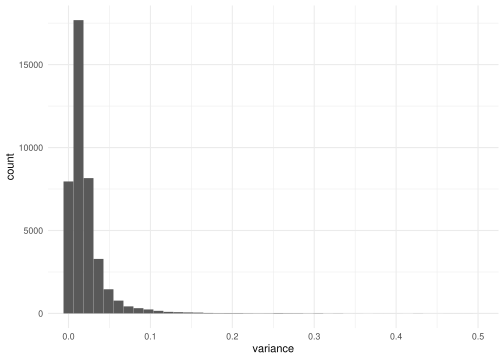
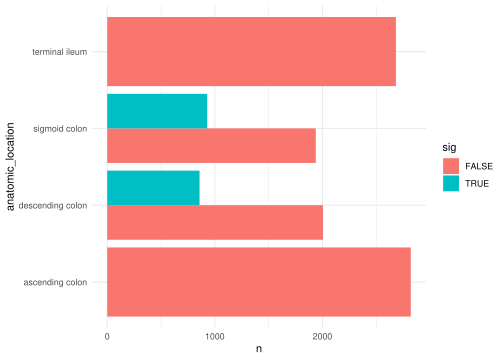
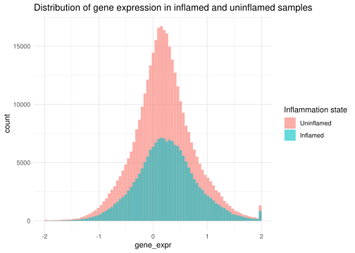
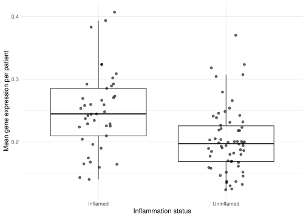
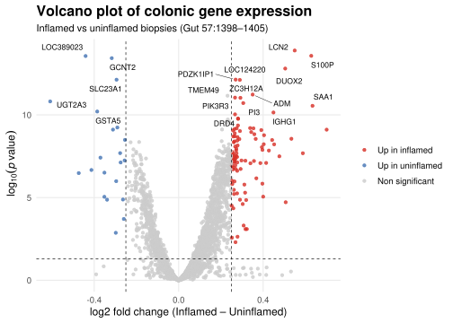

library("GEOquery")
library("tidyverse")00_all
All
Loading libraries
Loading data
Loading libraries
Make _raw dir
# Create data dirs
data_dir <- "../data/"
raw_dir <- "../data/_raw/"
if (!dir.exists(data_dir)) {
dir.create(data_dir)
}
if (!dir.exists(raw_dir)) {
dir.create(raw_dir)
}Loading GEO data using GEOquery
https://warwick.ac.uk/fac/sci/moac/people/students/peter_cock/r/geo/
On the GEO database, files are stored as .soft files, with metadata in the beginning and (for the case of “GSE11223”) gene expression data at the end.
The getGEO function from GEOquery obtains queries GEO datasets with the GEO id (if specified). In this case for GSE11223. Else, filename can be supplied to import a downloaded file from the GEO database
gse11223 <- getGEO(GEO="GSE11223")
gds3268 <- getGEO(GEO="GDS3268")Making raw data files
write_rds(gds3268, file=file.path(raw_dir,"/raw_expression_data.rds"))
write_rds(gse11223, file=file.path (raw_dir,"/raw_meta_data.rds"))Working with the raw “gse” data
For GSE11223, getGEO pulls the data into a list of length 1. The file GSE11223_series_matrix.txt.gz is extracted into the first (and only) position of that list. We therefore extract the data, getting rid of the parent list:
gse11223 <- gse11223$GSE11223_series_matrix.txt.gzNow, the gse11223 variable is a “Large ExpressionSet” of 44.1MB.
Working with the curated “gds” data
gds3268 is the curated dataset for the project, meaning that the meta data of samples and the expression table can be easily extracted using Meta() and Table() respectively.
gds3268_meta <- Meta(gds3268)
colnames(gds3268)NULLgds3268_expression <- Table(gds3268)
slice_sample( gds3268_expression, n = 10) ID_REF IDENTIFIER GSM282855 GSM282856 GSM282857 GSM282858 GSM282859
1 2549 A_32_P27991 0.264540 0.449170 0.575420 0.336340 0.378410
2 25427 MRPS9 0.087239 0.078394 0.132980 0.239350 0.134010
3 10743 PIGV -0.072568 -0.006173 0.101690 0.034114 0.062718
4 1215 CD44 -0.001215 -0.028971 -0.075025 -0.049194 -0.042927
5 26276 A_32_P102247 -0.091853 0.013408 -0.082838 -0.088280 -0.100770
6 18953 EXTL1 -0.130710 -0.030186 -0.075758 -0.092890 -0.098909
7 10744 NBPF3 0.120630 -0.032592 0.017973 0.046104 0.007980
8 29468 CCNYL1 0.263910 0.602350 0.133880 0.166660 0.307160
9 6419 CEP104 0.384530 0.326860 0.271870 0.326090 0.471980
10 27260 LOC100506652 -0.112760 0.032076 -0.101530 -0.060613 -0.201180
GSM282860 GSM282861 GSM282862 GSM282863 GSM282864 GSM282865 GSM282866
1 0.378740 0.372080 0.475130 0.335510 0.271310 0.123630 0.282700
2 0.168870 0.122480 0.091662 0.140410 0.086740 0.097682 -0.002087
3 -0.182820 -0.110490 0.057412 0.079668 -0.094096 -0.007698 -0.181860
4 -0.053598 0.038958 -0.068498 -0.004164 -0.002237 -0.096248 -0.026263
5 0.040942 -0.008177 -0.068967 0.063077 -0.004844 -0.010736 0.015633
6 -0.060771 -0.088254 -0.072613 -0.069437 -0.019967 -0.019839 -0.028295
7 -0.056054 0.007059 0.001598 -0.056393 -0.193090 -0.207990 -0.088303
8 0.098444 0.170270 0.387500 0.348990 0.195740 0.177600 0.277730
9 0.371980 0.390950 0.307120 0.307580 0.359380 0.293120 0.127640
10 0.001060 -0.013586 0.080143 0.254780 0.005957 -0.034918 -0.234550
GSM282867 GSM282868 GSM282869 GSM282870 GSM282871 GSM282872 GSM282904
1 0.411280 0.227100 0.374230 0.106620 0.339890 0.257320 0.192490
2 0.014259 -0.005639 -0.150170 -0.074307 -0.090926 0.100420 -0.538980
3 0.111080 -0.050602 -0.092692 -0.165270 -0.036759 -0.126530 -0.415520
4 -0.031537 -0.036599 0.052495 -0.011464 -0.021879 -0.071979 0.069991
5 0.096997 -0.017813 0.042751 0.052689 0.094768 -0.007460 0.090721
6 -0.058810 -0.042092 0.077833 0.044329 0.026954 0.018134 0.167380
7 -0.145830 -0.207470 0.065641 0.022173 -0.055046 -0.051998 0.217920
8 0.134190 0.206390 0.209080 0.396780 0.096996 0.430660 0.282010
9 0.196510 0.282220 -0.127970 -0.019571 0.284530 -0.029695 -0.385560
10 -0.079595 0.078109 -0.009620 0.024816 -0.092800 -0.005303 -0.128060
GSM282910 GSM282913 GSM282915 GSM282921 GSM282927 GSM282873 GSM282874
1 0.631010 0.517240 0.618600 0.208680 0.549740 0.538640 0.375210
2 0.082407 0.068728 0.060644 0.087778 0.140680 -0.273160 -0.100160
3 -0.003676 -0.017931 -0.097536 -0.274590 -0.261420 -0.075380 -0.039740
4 -0.029108 0.078692 0.036140 0.057934 -0.045223 0.006012 0.050464
5 0.040576 0.146590 -0.005462 -0.052121 0.010829 0.127690 -0.077201
6 0.020419 0.102080 0.020902 0.049436 0.015205 0.013306 -0.034416
7 0.009242 0.056601 0.026523 -0.047586 -0.017035 0.050733 -0.178890
8 0.071257 -0.003208 0.224950 0.087733 0.081969 -0.110670 -0.141390
9 0.128800 0.188320 0.050489 0.005474 0.065556 0.373630 0.362170
10 -0.046693 -0.337440 -0.050228 -0.333690 -0.124590 0.059820 -0.060402
GSM282875 GSM282905 GSM282914 GSM282918 GSM282876 GSM282877 GSM282878
1 0.389540 0.410750 0.290650 0.261320 0.428720 0.474540 0.365180
2 -0.118490 -0.185300 -0.286250 -0.262280 -0.034247 0.131540 -0.039254
3 -0.083024 -0.112870 -0.107440 -0.015009 -0.089097 0.101860 -0.031915
4 0.101040 0.163900 0.098916 0.032692 0.047648 -0.015088 -0.073927
5 0.005852 -0.020244 0.260280 0.045096 -0.010676 0.024859 -0.033605
6 0.061939 0.009098 0.135980 0.031126 0.020890 -0.034132 -0.093689
7 0.041923 0.047115 0.209630 0.021094 0.192620 0.052764 0.053312
8 -0.191140 -0.278280 -0.396720 -0.091721 0.206720 0.029952 0.203030
9 0.424260 0.096480 NA 0.236890 0.017394 0.089494 0.174770
10 -0.071420 0.046865 -0.147450 -0.324290 -0.190660 -0.138060 0.001737
GSM282879 GSM282880 GSM282881 GSM282882 GSM282883 GSM282884 GSM282885
1 0.490460 0.705650 0.464150 0.043815 0.562690 0.387310 0.569910
2 0.157910 0.088966 -0.006856 0.059825 0.118740 0.168240 0.085906
3 0.018333 -0.143250 -0.078325 -0.013342 -0.030519 -0.114580 -0.094100
4 0.275170 0.077794 0.030346 -0.013768 -0.019912 -0.001666 -0.055908
5 0.066032 -0.012658 -0.020221 0.075313 0.021201 0.010727 -0.057261
6 -0.142080 -0.086635 -0.038746 0.033876 -0.080166 0.107330 -0.090719
7 0.151020 0.022964 0.125650 0.112030 0.050528 0.102940 0.126030
8 0.147980 0.292310 0.397600 0.214170 0.401720 -0.029451 0.108780
9 0.017316 0.262110 0.199920 -0.163980 0.264100 -0.046592 0.277640
10 -0.332390 0.107570 -0.106470 -0.163890 0.104450 -0.211150 -0.090882
GSM282886 GSM282887 GSM282888 GSM282889 GSM282890 GSM282902 GSM282903
1 0.706760 0.529170 0.483790 0.436610 0.309440 0.501160 0.390650
2 0.090578 0.131670 0.093590 0.066431 0.106890 -0.006762 -0.089506
3 0.138410 -0.034094 -0.165760 -0.072309 -0.107010 -0.003573 -0.049706
4 -0.077323 0.141970 -0.006196 0.129800 0.034399 -0.077013 0.020282
5 0.061156 0.097224 0.020210 0.068741 0.062275 0.036452 -0.001169
6 -0.042169 -0.037788 0.007349 -0.058935 0.057099 -0.032566 -0.020937
7 0.143590 0.120440 0.034399 0.104740 0.102770 -0.036774 -0.074061
8 0.052714 0.078366 0.338230 0.160570 0.159220 0.193150 0.409840
9 0.188860 0.087227 0.053580 0.278360 -0.167610 0.852880 0.390480
10 -0.090238 NA -0.077511 0.142110 NA 0.315480 0.020425
GSM282907 GSM282909 GSM282912 GSM282920 GSM282924 GSM282891 GSM282892
1 0.560540 0.695130 0.581050 0.271420 0.555750 0.039151 0.346530
2 -0.033761 -0.028259 -0.029403 0.111340 0.135470 -0.223880 -0.123590
3 0.030312 -0.019759 0.077518 -0.181430 -0.174920 -0.246470 -0.225130
4 0.029119 -0.019328 -0.006876 -0.035518 0.041876 0.030691 -0.010770
5 -0.025846 -0.009506 0.117170 -0.067375 -0.087998 0.245850 0.163100
6 0.066220 0.043213 -0.059456 0.015128 -0.057401 0.279680 0.142580
7 0.022740 -0.014639 -0.031016 0.006751 -0.094693 0.135680 -0.048044
8 0.228960 0.388390 0.257530 0.063352 0.207410 0.102610 0.272810
9 0.045167 0.223490 0.061908 -0.075647 0.209840 -0.220690 0.063805
10 -0.145170 -0.638760 -0.101530 -0.300620 -0.091751 -0.127780 0.230100
GSM282893 GSM282894 GSM282895 GSM282896 GSM282897 GSM282898 GSM282899
1 0.448060 0.531670 0.513820 0.501460 0.570130 0.449750 0.650710
2 0.087868 0.048419 0.037921 0.156820 0.027019 0.041706 -0.114850
3 -0.024627 -0.142970 -0.121270 -0.084131 -0.120920 0.019734 -0.153940
4 -0.054033 0.266150 0.023679 -0.159130 0.053111 0.116480 0.066774
5 0.270050 0.134870 0.031608 0.081782 -0.283400 0.005881 -0.005673
6 0.304870 0.204130 0.029743 0.164240 -0.005915 0.084714 -0.008102
7 -0.070045 0.123150 -0.104680 -0.118840 0.000926 -0.075148 -0.081196
8 0.106510 0.136660 0.374450 0.238300 0.236840 0.107920 0.442320
9 0.274900 -0.095609 0.162390 0.334410 0.180930 0.101990 0.513870
10 -0.079737 -0.092285 -0.024710 -0.152600 -0.036014 -0.053944 -0.186470
GSM282900 GSM282901 GSM282906 GSM282908 GSM282911 GSM282916 GSM282919
1 0.397080 0.361560 0.488580 -0.358040 0.499330 0.339660 0.564540
2 0.145870 0.059499 0.027198 -0.408950 -0.024918 0.020719 0.009721
3 -0.156240 -0.171190 0.026638 -0.354580 0.026800 -0.189140 -0.108570
4 0.057263 0.186010 0.047052 0.100610 0.033363 0.057204 0.055310
5 -0.135430 0.049338 0.015512 0.219170 0.014074 0.016216 0.008036
6 0.088196 0.028540 0.084133 0.238530 0.013895 0.054503 -0.015463
7 -0.002735 -0.095237 -0.012071 -0.039246 -0.064969 -0.016748 -0.065414
8 0.176370 0.504800 0.248700 -0.183120 0.261380 0.177600 0.175610
9 0.004769 0.095849 0.131760 -0.477090 0.027340 0.122170 0.258020
10 -0.184390 -0.282910 -0.175610 -0.263240 0.205990 -0.207490 -0.050167
GSM282923 GSM282917 GSM282922 GSM282926 GSM282925 GSM282935 GSM282938
1 0.205010 0.754320 0.413260 0.590960 0.564880 0.542380 0.569940
2 0.041192 -0.037075 -0.016962 0.109340 0.098258 0.059514 0.034245
3 -0.168400 -0.076326 -0.044939 -0.009949 0.019065 -0.124980 0.088562
4 -0.367440 0.134350 0.020347 0.070750 -0.066473 0.088203 -0.037613
5 -0.022119 0.072804 -0.050051 -0.058552 -0.009215 0.006478 -0.003498
6 -0.055169 0.055691 0.034750 0.040989 -0.018091 -0.107950 -0.051450
7 -0.096277 0.012235 0.035920 -0.034799 -0.028242 -0.122100 0.001418
8 0.268580 0.057197 -0.001377 0.037789 0.111030 -0.095485 0.236760
9 0.067471 0.140580 -0.092611 0.059087 0.025789 0.356710 0.157580
10 -0.008185 -0.112930 -0.117900 -0.059252 -0.121970 0.069013 -0.133760
GSM282940 GSM282941 GSM282943 GSM282944 GSM282946 GSM282947 GSM282948
1 0.094356 0.449760 0.283780 0.378340 0.337400 0.322190 0.424780
2 0.127800 0.010787 0.029844 0.097772 0.031599 -0.029565 0.069050
3 0.006765 0.145280 -0.174190 -0.035028 0.053727 -0.036463 0.000398
4 -0.087138 -0.005527 -0.054915 -0.070946 -0.055419 -0.042647 0.030104
5 0.003931 -0.051746 -0.018155 -0.061962 0.040854 0.045070 0.077373
6 -0.064932 -0.088278 0.009692 -0.069995 -0.054422 -0.083352 0.008015
7 -0.117230 0.122220 0.333890 0.043482 0.115070 0.072139 -0.054701
8 0.244050 0.074947 -0.036584 0.272710 0.383260 0.388810 0.239960
9 0.307070 0.479840 -0.016043 0.318680 0.176900 0.107830 0.153570
10 0.019367 -0.042684 -0.186160 -0.001506 0.112050 0.028775 -0.075859
GSM282949 GSM282950 GSM282951 GSM282952 GSM282953 GSM282955 GSM282956
1 0.497070 0.342180 0.405280 0.566000 0.427090 0.473920 0.069612
2 -0.081812 -0.059254 0.042937 0.070913 -0.063439 -0.000980 -0.208560
3 -0.064987 -0.029344 0.067105 0.118050 0.013719 -0.103980 -0.205400
4 0.027894 0.024130 0.045236 0.003808 -0.083609 -0.080370 -0.002851
5 0.062993 0.093396 0.122500 0.065909 -0.025299 0.043877 0.017807
6 0.006614 -0.036787 -0.020685 -0.009909 -0.032554 0.027956 0.141480
7 0.017091 -0.008191 -0.051309 -0.115780 -0.053237 0.029635 0.244450
8 0.133850 0.335540 0.213950 0.153900 0.481230 0.141960 -0.080699
9 0.178740 0.009877 0.229230 0.109580 0.236590 0.109490 -0.241060
10 -0.114710 -0.102910 0.076376 0.082293 -0.052200 -0.199210 -0.189350
GSM282959 GSM282966 GSM282968 GSM282974 GSM283016 GSM283021 GSM283024
1 0.629930 0.067429 0.375160 -0.023203 0.183420 0.432840 0.485240
2 -0.035700 -0.102660 -0.038074 -0.007671 -0.172800 -0.006926 -0.013302
3 0.001277 -0.225300 -0.038881 -0.039336 -0.322750 -0.393320 -0.158750
4 0.074656 -0.079367 -0.020748 -0.126560 0.149500 0.218300 0.099246
5 -0.009282 -0.017826 0.089342 0.028443 0.022782 0.275450 0.118510
6 -0.075288 -0.009406 -0.051071 -0.019073 0.066725 0.384380 0.095797
7 -0.038783 -0.198600 -0.195610 -0.339300 0.387960 0.310300 0.332240
8 0.161780 0.467030 0.307940 0.259920 -0.150790 0.129140 -0.000186
9 0.214570 0.179250 0.289560 0.273270 -0.051625 -0.327330 -0.093873
10 -0.127640 0.041694 0.119170 0.044662 -0.294710 -0.092892 NA
GSM283041 GSM283043 GSM282957 GSM282958 GSM282960 GSM282971 GSM283015
1 0.111030 0.417780 0.136940 0.301600 0.408830 0.222240 0.418480
2 -0.070238 0.121850 -0.178240 -0.133660 0.089043 -0.157880 -0.166780
3 -0.430080 -0.054635 -0.126370 0.053658 0.019463 -0.113010 -0.274390
4 0.134470 -0.017606 0.021806 0.019200 -0.001084 0.023678 0.124730
5 0.015806 -0.014976 0.058295 -0.021358 0.124660 0.024228 0.047202
6 0.117990 -0.024556 0.031563 -0.043248 -0.046168 -0.020989 0.057314
7 0.197810 -0.111760 -0.152980 -0.200330 -0.257130 -0.100540 0.016798
8 -0.307880 0.097490 -0.141000 0.004510 0.390450 -0.084180 -0.233020
9 -0.321320 0.130500 0.473260 0.442890 0.270720 0.603880 -0.051762
10 -0.140920 -0.033276 -0.235570 -0.126360 0.201730 -0.037932 -0.276650
GSM282962 GSM282963 GSM282977 GSM282978 GSM282987 GSM282988 GSM282989
1 0.487840 0.603640 0.683340 0.650180 0.627860 0.639830 0.619540
2 0.061316 0.120940 0.028229 0.133200 0.052818 0.019533 0.186610
3 0.139930 0.023044 0.035874 0.168300 0.077794 0.062336 0.082490
4 -0.144430 0.041686 -0.129130 0.017292 0.148880 -0.040792 0.027345
5 -0.075367 0.085848 -0.062802 0.025085 0.060654 0.063286 0.073472
6 -0.039028 -0.106450 -0.085493 0.009050 -0.102190 -0.099320 -0.090864
7 0.045013 0.086061 0.024978 -0.024891 0.125460 0.141160 0.083482
8 0.132650 0.494340 0.307710 0.150970 0.283150 0.249480 -0.059688
9 1.176700 0.192560 0.405380 0.050719 0.377200 0.304270 0.255840
10 0.009677 -0.089024 -0.249540 -0.161210 -0.272280 0.002743 0.046925
GSM282990 GSM282991 GSM282992 GSM282993 GSM282994 GSM282995 GSM283020
1 0.721450 0.630840 0.514750 0.298260 0.618310 0.493290 0.432230
2 0.099196 0.036094 0.113170 -0.063032 0.039224 0.098623 0.078619
3 0.118090 0.073482 0.025145 -0.085027 0.006304 0.017861 -0.192830
4 -0.018289 -0.017762 -0.118420 -0.006373 0.104020 -0.123820 0.195710
5 -0.025267 0.129620 -0.019337 0.107440 -0.003315 0.043570 -0.210540
6 -0.013442 -0.002441 -0.016312 -0.024783 -0.054815 -0.162460 0.098508
7 0.001857 0.022219 0.113780 -0.019374 0.122180 -0.040797 0.291910
8 0.120300 0.452980 0.007610 0.154040 0.187890 0.333390 0.013980
9 0.341860 1.132100 0.373990 0.359820 0.321230 0.451890 -0.178400
10 -0.087231 0.086623 -0.109160 -0.067498 0.111150 0.085006 -0.123900
GSM283023 GSM282931 GSM282939 GSM282981 GSM282983 GSM282985 GSM283000
1 0.376240 0.165530 0.379580 0.418870 0.604450 0.399250 0.517050
2 -0.283810 -0.067790 0.069964 -0.024525 -0.018806 0.022420 0.056553
3 -0.281790 -0.048275 0.066228 -0.103210 0.023457 0.049195 0.039976
4 0.248990 0.082196 -0.052115 0.096654 0.077275 0.013195 -0.024298
5 0.214530 0.018381 0.094319 0.000470 0.031551 0.111630 0.053423
6 0.234870 -0.017012 -0.169680 0.014597 -0.008696 -0.041496 0.055708
7 0.409500 -0.253480 -0.138910 -0.011185 -0.048440 -0.127880 -0.181660
8 0.143750 0.207240 0.349440 0.142780 0.080313 0.187740 0.175960
9 -0.081591 0.323050 0.691970 0.144100 0.133080 0.211720 0.295150
10 -0.058464 -0.139760 0.000110 -0.211660 -0.150570 -0.213930 -0.119910
GSM283001 GSM283002 GSM283003 GSM283004 GSM283005 GSM283006 GSM283007
1 0.341210 0.625190 0.561730 0.633920 0.495430 0.301960 0.410780
2 0.052620 0.061894 0.078689 0.048050 -0.124490 -0.102360 -0.002585
3 -0.360680 0.007538 0.045811 -0.006830 -0.115740 -0.206210 -0.089156
4 0.047715 -0.078588 0.046115 0.048185 0.175330 0.111440 0.116710
5 0.031904 0.012287 -0.050788 -0.058211 0.067039 -0.008075 -0.031458
6 0.173790 0.030745 -0.029305 0.025225 0.132570 0.207430 -0.007119
7 0.005712 0.025921 -0.022072 0.110630 0.036350 0.169350 -0.022799
8 -0.025694 0.208810 0.158680 0.162650 0.347110 0.254490 0.289600
9 -0.102670 0.016139 0.098146 0.430110 -0.072931 0.117690 0.120990
10 -0.203150 -0.116670 NA -0.145220 -0.094162 -0.276820 -0.155430
GSM283008 GSM283009 GSM283010 GSM283011 GSM283022 GSM283034 GSM283049
1 -0.077959 0.176510 0.542950 0.474520 0.489910 0.291490 0.493780
2 0.062516 -0.025528 0.037702 -0.052707 0.043485 -0.031724 0.168460
3 -0.276580 -0.241760 -0.096561 -0.042700 -0.170450 -0.172750 -0.026293
4 0.115390 0.066994 0.149970 0.096167 0.101270 -0.015520 -0.105600
5 -0.036626 -0.085047 -0.033842 -0.082807 -0.018568 0.002333 0.020393
6 0.044228 0.038012 0.092703 0.058612 0.098638 0.025189 0.053494
7 -0.019618 0.001610 -0.123250 0.033697 0.009899 -0.112860 -0.068492
8 0.252630 0.225460 -0.190360 0.204330 0.182290 0.245060 0.179150
9 0.105690 0.060583 0.076506 0.092244 0.036955 0.055202 0.151580
10 -0.383320 -0.171660 -0.324200 -0.148830 NA -0.238990 -0.130450
GSM283051 GSM282929 GSM282933 GSM282936 GSM282937 GSM282942 GSM282945
1 0.363050 -0.018698 0.117430 0.075415 -0.366790 0.172570 0.211490
2 -0.188300 -0.049605 -0.127710 -0.097769 -0.228060 0.052506 0.000218
3 -0.266370 -0.016776 -0.258810 -0.245240 -0.492470 -0.139330 -0.130500
4 0.050218 0.058229 0.016247 0.064830 0.150890 -0.042411 -0.016168
5 -0.063852 -0.001638 0.158900 0.010572 0.056770 -0.040322 0.057101
6 0.109860 0.038707 0.065983 -0.039182 0.201290 -0.023336 -0.031132
7 0.131700 -0.174380 -0.125880 -0.038773 0.206050 0.084908 0.019295
8 -0.105660 0.111330 0.311550 -0.163500 -0.045629 0.438870 0.475350
9 -0.027039 0.544920 0.103540 0.111460 -0.499270 0.212280 0.273650
10 NA -0.086680 -0.070634 -0.157190 -0.120980 -0.031899 -0.046339
GSM282954 GSM282961 GSM282964 GSM282965 GSM282967 GSM282969 GSM282970
1 0.312540 0.558960 -0.002442 0.252620 0.480920 0.141870 0.133700
2 -0.149240 -0.263960 -0.236800 0.205240 -0.086492 -0.116140 -0.275140
3 0.012795 -0.003885 -0.094816 -0.124160 -0.171160 -0.290000 -0.255760
4 -0.065676 0.065975 0.093424 -0.037740 -0.012335 -0.085870 0.029443
5 0.062036 0.013404 -0.002505 -0.025977 0.038206 0.071703 0.016939
6 0.002798 -0.008430 -0.053017 -0.014926 0.048343 0.036127 0.063848
7 -0.128540 0.008783 -0.034228 -0.017366 -0.039006 0.136690 -0.052290
8 0.405320 0.529370 0.318660 0.267720 0.395230 -0.019118 0.053805
9 0.147080 0.223520 0.172850 0.270020 -0.067024 0.105220 0.093073
10 -0.246990 0.141550 -0.035846 0.014083 -0.050360 -0.150300 -0.102360
GSM282972 GSM282973 GSM282975 GSM282996 GSM282999 GSM283014 GSM283019
1 0.323490 0.506200 0.365950 0.007481 0.356840 -0.051706 0.593830
2 -0.114620 -0.068803 0.006452 -0.250290 -0.004356 -0.218250 0.057059
3 0.051153 0.056236 -0.113530 -0.380760 -0.321750 -0.388890 -0.215930
4 -0.004422 0.051989 0.011466 0.269460 0.131920 0.172540 0.134840
5 0.026598 0.039378 -0.051176 -0.069825 0.073952 -0.004879 -0.028774
6 -0.002975 0.008761 -0.080797 0.141410 0.059748 0.160920 -0.000799
7 -0.083961 -0.041801 -0.112810 0.215810 -0.093739 0.460200 0.214970
8 0.162890 0.369080 0.316920 -0.369930 0.149130 -0.238940 0.035863
9 0.190320 0.299920 0.149210 -0.363960 0.045786 -0.163310 -0.097524
10 -0.183000 -0.061974 -0.005480 0.031116 -0.134920 -0.173280 NA
GSM283026 GSM283029 GSM283030 GSM283033 GSM283035 GSM283036 GSM283038
1 0.397130 0.501300 0.583120 0.439870 0.448990 0.612350 0.478770
2 0.031709 -0.156300 -0.153370 -0.153750 -0.013141 0.082047 0.052454
3 -0.038999 -0.377340 -0.155030 -0.034782 -0.251580 -0.033260 -0.150210
4 0.003364 0.134090 0.054502 -0.017904 -0.003912 -0.001444 -0.008804
5 -0.043869 -0.015060 -0.132290 0.009247 -0.202070 0.004841 -0.043446
6 0.028844 0.166440 0.044771 0.053739 -0.058794 0.037222 -0.029505
7 -0.098780 0.393600 0.076483 -0.040783 -0.061044 0.053673 -0.102300
8 0.040024 -0.182100 0.202560 0.330500 0.175630 0.002103 0.285730
9 0.115740 -0.563040 -0.005954 0.060880 0.078664 0.031124 0.164050
10 -0.109390 -0.094552 -0.114380 -0.059753 -0.078864 -0.243180 -0.279840
GSM283046 GSM283050 GSM283053 GSM283055 GSM283056 GSM282928 GSM282930
1 0.344090 0.060733 0.244580 0.179980 0.314940 0.353590 0.431140
2 -0.039341 -0.175280 -0.035788 -0.013150 -0.016045 0.057253 -0.040079
3 -0.160040 -0.487670 -0.172130 -0.308260 -0.101450 -0.141140 -0.008510
4 0.077731 0.122730 0.008733 -0.021552 -0.021736 -0.087650 0.048612
5 -0.052750 0.009118 -0.019882 0.063700 -0.011890 -0.306090 0.118840
6 -0.010057 0.201040 0.017470 0.030904 0.005530 -0.125470 -0.053523
7 -0.128830 0.164490 -0.154650 -0.094551 -0.129340 0.000462 0.018736
8 0.275090 -0.183480 0.370960 0.320080 0.030681 0.217750 0.353710
9 0.169230 -0.489610 0.088068 0.114450 0.201900 0.623740 0.046083
10 -0.174720 0.035292 0.081623 -0.131880 0.060375 0.049016 0.118630
GSM282932 GSM282934 GSM282976 GSM282979 GSM282998 GSM283013 GSM283017
1 0.549510 0.110920 0.642230 0.321690 0.196370 0.108320 0.510890
2 0.012279 -0.111300 0.014449 0.085086 -0.052405 -0.342420 -0.016384
3 -0.046060 -0.449440 0.161300 -0.014806 -0.257960 -0.431430 0.033954
4 0.018611 0.199250 -0.059251 0.046198 0.150700 0.188370 0.122270
5 0.072043 0.016211 0.173640 -0.126370 0.201160 0.007562 -0.159620
6 -0.021074 0.150920 -0.044641 -0.044526 0.018981 0.144590 0.037530
7 0.044838 0.334000 0.097279 0.291120 -0.124530 0.331650 0.026861
8 0.098258 -0.154400 0.468050 0.396280 0.083816 0.108790 0.213390
9 0.160140 -0.283520 0.133660 0.473630 0.162250 -0.183710 0.237860
10 NA -0.122050 0.010390 -0.330890 0.111650 -0.271510 -0.283650
GSM283018 GSM283025 GSM283028 GSM283032 GSM283037 GSM283040 GSM283042
1 0.608120 0.352030 0.510590 0.465590 0.232190 0.359950 0.374250
2 0.061569 -0.040621 0.003435 -0.082514 0.061121 -0.168430 0.007592
3 -0.048856 -0.126690 -0.068371 0.007095 -0.178270 -0.179690 -0.115200
4 0.081027 0.082782 0.064530 -0.103360 -0.023336 0.044682 -0.118940
5 -0.057653 -0.090232 0.044582 0.014307 -0.029418 -0.016680 0.001182
6 -0.043329 -0.012455 -0.004913 0.050354 -0.013552 0.079771 0.024000
7 0.002286 -0.006663 -0.039160 -0.006101 -0.176650 0.037749 -0.087940
8 0.157520 -0.133170 0.026682 0.087569 0.138680 0.164680 0.097093
9 0.220120 0.198360 0.066776 0.143860 0.172350 -0.003858 0.003797
10 -0.303880 -0.097885 -0.023595 -0.208410 -0.105480 0.017579 0.233590
GSM283045 GSM283048 GSM283052 GSM283054 GSM282980 GSM282982 GSM282984
1 0.374340 0.592300 0.267150 0.272860 0.367570 0.634300 0.311960
2 -0.032675 0.042740 -0.014588 -0.019701 -0.033776 -0.053088 -0.065190
3 -0.156210 -0.149500 -0.135420 -0.253890 -0.231270 -0.095100 -0.193900
4 0.016946 0.055071 0.004236 0.043606 0.049359 0.069861 0.087297
5 -0.045797 -0.079134 -0.094836 -0.032724 0.085157 0.097280 0.036502
6 -0.021893 -0.005969 0.046095 -0.003501 0.086936 -0.060200 0.046689
7 -0.087890 -0.091118 -0.154440 -0.149200 0.034335 0.065726 -0.102690
8 0.081425 0.044360 0.330850 0.044181 0.168410 0.295090 0.310020
9 0.148010 0.120000 0.183900 0.132360 0.042450 0.198650 0.165700
10 0.067303 -0.022278 0.008187 0.045888 -0.192970 -0.264110 -0.077172
GSM282986 GSM282997 GSM283012 GSM283027 GSM283031 GSM283039 GSM283044
1 -0.041742 0.005155 0.106650 0.511420 0.466950 0.418570 0.435480
2 0.097149 -0.226310 -0.116630 0.020578 -0.048970 -0.094228 0.025792
3 -0.153780 -0.533570 -0.311770 0.012348 -0.024514 -0.152470 -0.055055
4 0.067632 0.244370 0.214040 0.006100 -0.021543 0.043534 -0.045012
5 0.000532 -0.030773 0.099141 0.008751 0.042746 -0.065850 0.007942
6 0.192210 0.176670 0.154780 -0.039794 0.029111 0.039641 0.011281
7 -0.125270 0.166270 0.245790 -0.089919 -0.056793 -0.053719 -0.198940
8 -0.154240 -0.336540 0.070486 0.168530 0.203360 0.323310 0.223380
9 0.008876 -0.459570 -0.204490 0.078183 0.084672 0.062590 0.254150
10 -0.211790 -0.177570 -0.140490 -0.158800 -0.031640 -0.135570 -0.080201
GSM283047
1 0.479440
2 0.120240
3 -0.037988
4 -0.009312
5 0.008446
6 0.006710
7 -0.070978
8 -0.038515
9 0.183970
10 -0.088045Save gse11223 & gds3268 objects in _raw/
underlying tables can be extracted from each when they’re loaded as rds files, this ensures collectively of the two pulls when working with the data.
write_rds(gds3268, file=file.path(data_dir,"01_load_expression_data.rds"))
write_rds(gse11223, file=file.path (data_dir,"01_load_meta_data.rds"))_raw/ will indeed only contain raw data pulls (apart from the disturbing list extraction for gse11223…)
Cleaning environment at the end of the file
rm(list = ls())Cleaning data
Loading libraries
library("stringr")
library("tidyverse")Clean _raw/ data to data/
Converts each of the following to a tibble dataframe in the tidy format
the expression GEODataTable from GDS in _raw/
the metadata from GSE
phenoData$data - metadata concerning samples (patients)
featureData$data - metadata concerning genes
Setup/Initialization
data_dir <- "../data/"
raw_dir <- "../data/_raw/"GEODataTable from raw/raw_expression_data.rds
Loading in the data
Expression data of patients with different genes. (patient) Samples are stored as columns and gene names as rows, which we would like to flip, to align with tidy standards. But first we load the data from _raw/
exprs_geodf <- Table(read_rds(file.path(data_dir,"01_load_expression_data.rds")))
exprs_geodf <- as_tibble(exprs_geodf)
exprs_geodf# A tibble: 44,290 × 204
ID_REF IDENTIFIER GSM282855 GSM282856 GSM282857 GSM282858 GSM282859 GSM282860
<int> <chr> <dbl> <dbl> <dbl> <dbl> <dbl> <dbl>
1 1 BrightCor… NA NA NA NA NA NA
2 2 NegativeC… NA NA NA NA NA NA
3 3 A_23_P803… 0.0387 -0.109 -0.0443 -0.0334 -0.0436 0.0268
4 4 APBA2 -0.133 -0.109 -0.136 -0.119 -0.164 -0.185
5 5 MAP3K6 -0.0422 0.0422 0.0180 0.0635 0.0720 0.0587
6 6 ZNF121 -0.212 -0.240 -0.339 -0.314 -0.436 -0.0504
7 7 Pro25G NA NA NA NA NA NA
8 8 RET NA -0.115 -0.442 -0.250 -0.440 -0.467
9 9 BX094364 0.0346 0.0149 -0.0541 -0.0582 -0.0832 -0.0951
10 10 C12orf56 0.0286 -0.0422 0.0311 -0.0577 -0.0826 -0.0948
# ℹ 44,280 more rows
# ℹ 196 more variables: GSM282861 <dbl>, GSM282862 <dbl>, GSM282863 <dbl>,
# GSM282864 <dbl>, GSM282865 <dbl>, GSM282866 <dbl>, GSM282867 <dbl>,
# GSM282868 <dbl>, GSM282869 <dbl>, GSM282870 <dbl>, GSM282871 <dbl>,
# GSM282872 <dbl>, GSM282904 <dbl>, GSM282910 <dbl>, GSM282913 <dbl>,
# GSM282915 <dbl>, GSM282921 <dbl>, GSM282927 <dbl>, GSM282873 <dbl>,
# GSM282874 <dbl>, GSM282875 <dbl>, GSM282905 <dbl>, GSM282914 <dbl>, …Now we can treat it as a normal dataframe to try to clean it to a tidy dataframe.
Removing empty rows
All 204 columns are (patient) Samples, and of type <dbl> with NA values. With this data we would like to keep the random NA values that appear throughout the dataset as they clearly represent no data. Substituting it with zeros would indicate that there is no expression of that gene in that sample, which is not necessarily the case (most likely not). Although, if an entire row is made of zeros, we would like to exclude that gene.
fully_na <- exprs_geodf |>
filter(if_all(starts_with("GSM"), is.na)) |>
select("ID_REF")
dplyr::count(fully_na)# A tibble: 1 × 1
n
<int>
1 3299There are 3299 identifiers with completely empty rows in the expression dataset, given in the list “fully_na”. We cannot use the gene column name: “IDENTIFIER”, as it contains duplicates. Lets exclude fully_na indexes from the dataset:
exprs_df <- exprs_geodf |>
anti_join(fully_na, by = "ID_REF")
exprs_df# A tibble: 40,991 × 204
ID_REF IDENTIFIER GSM282855 GSM282856 GSM282857 GSM282858 GSM282859 GSM282860
<int> <chr> <dbl> <dbl> <dbl> <dbl> <dbl> <dbl>
1 3 A_23_P803… 0.0387 -0.109 -0.0443 -0.0334 -0.0436 0.0268
2 4 APBA2 -0.133 -0.109 -0.136 -0.119 -0.164 -0.185
3 5 MAP3K6 -0.0422 0.0422 0.0180 0.0635 0.0720 0.0587
4 6 ZNF121 -0.212 -0.240 -0.339 -0.314 -0.436 -0.0504
5 8 RET NA -0.115 -0.442 -0.250 -0.440 -0.467
6 9 BX094364 0.0346 0.0149 -0.0541 -0.0582 -0.0832 -0.0951
7 10 C12orf56 0.0286 -0.0422 0.0311 -0.0577 -0.0826 -0.0948
8 12 MBD2 0.151 0.211 0.196 0.216 0.235 0.220
9 13 LIFR-AS1 -0.268 -0.479 -0.323 -0.343 -0.459 -0.434
10 15 CMYA5 NA -0.0329 -0.275 0.0600 -0.341 -0.289
# ℹ 40,981 more rows
# ℹ 196 more variables: GSM282861 <dbl>, GSM282862 <dbl>, GSM282863 <dbl>,
# GSM282864 <dbl>, GSM282865 <dbl>, GSM282866 <dbl>, GSM282867 <dbl>,
# GSM282868 <dbl>, GSM282869 <dbl>, GSM282870 <dbl>, GSM282871 <dbl>,
# GSM282872 <dbl>, GSM282904 <dbl>, GSM282910 <dbl>, GSM282913 <dbl>,
# GSM282915 <dbl>, GSM282921 <dbl>, GSM282927 <dbl>, GSM282873 <dbl>,
# GSM282874 <dbl>, GSM282875 <dbl>, GSM282905 <dbl>, GSM282914 <dbl>, …With our little sanity check below, we can confirm that 3299 rows has been filtered from the data, matching the number of empty rows (fully_na)
dim(exprs_geodf)[[1]] - dim(exprs_df)[[1]] - dim(fully_na)[[1]][1] 0We could choose to reset ID_REF values and keep them as the index of the frame (essentially removing them), but that would obscure us from combining the expression dataframe with any potential meta data later on. We therefore instead denote the ID_REF column as lookup keys; since they’re unique.
Transposing the dataframe
As according to tidy principles, we need variables (gene names) as columns and observations (samples) as rows, which is currently flipped. We therefore need to transpose the dataframe.
We can use pivot_longer to concatenate columns and values except ID_REF, and then pivot_wider to unpack the values along with ID_REF, leaving sample names as row names. Although, currently we have both ID_REF and IDENTIFIER functioning as column headers. We choose to exclude the IDENTIFIER column from the table, and combine it with future metadata tables. As long as the ID_REF is present, we can lookup any meta data there might be for either variables and observations.
identifier_exprs <- exprs_df |> # for later use
select(ID_REF, IDENTIFIER)
exprs_df <- exprs_df |>
select(-IDENTIFIER) |>
#Packing column names to one (except ID_REF)
pivot_longer(
cols = -ID_REF,
names_to = "geo_accession",
values_to = "Value"
) |>
#Unpacking ID_REF as columns
pivot_wider(
names_from = ID_REF,
values_from = Value
)
exprs_df# A tibble: 202 × 40,992
geo_accession `3` `4` `5` `6` `8` `9` `10` `12`
<chr> <dbl> <dbl> <dbl> <dbl> <dbl> <dbl> <dbl> <dbl>
1 GSM282855 0.0387 -0.133 -0.0422 -0.212 NA 0.0346 0.0286 0.151
2 GSM282856 -0.109 -0.109 0.0422 -0.240 -0.115 0.0149 -0.0422 0.211
3 GSM282857 -0.0443 -0.136 0.0180 -0.339 -0.442 -0.0541 0.0311 0.196
4 GSM282858 -0.0334 -0.119 0.0635 -0.314 -0.250 -0.0582 -0.0577 0.216
5 GSM282859 -0.0436 -0.164 0.0720 -0.436 -0.440 -0.0832 -0.0826 0.235
6 GSM282860 0.0268 -0.185 0.0587 -0.0504 -0.467 -0.0951 -0.0948 0.220
7 GSM282861 -0.0448 -0.0768 0.292 -0.318 -0.141 0.0369 0.0377 0.190
8 GSM282862 -0.0588 -0.184 0.101 -0.286 -0.113 -0.0992 -0.0966 0.275
9 GSM282863 -0.0428 -0.108 0.125 -0.0161 -0.430 0.0272 -0.0273 0.281
10 GSM282864 -0.00537 -0.186 0.143 -0.274 -0.0461 0.0356 0.0444 0.108
# ℹ 192 more rows
# ℹ 40,983 more variables: `13` <dbl>, `15` <dbl>, `16` <dbl>, `17` <dbl>,
# `18` <dbl>, `19` <dbl>, `22` <dbl>, `24` <dbl>, `25` <dbl>, `26` <dbl>,
# `27` <dbl>, `29` <dbl>, `30` <dbl>, `31` <dbl>, `32` <dbl>, `33` <dbl>,
# `34` <dbl>, `36` <dbl>, `37` <dbl>, `38` <dbl>, `39` <dbl>, `40` <dbl>,
# `41` <dbl>, `43` <dbl>, `45` <dbl>, `46` <dbl>, `47` <dbl>, `48` <dbl>,
# `50` <dbl>, `51` <dbl>, `52` <dbl>, `53` <dbl>, `54` <dbl>, `55` <dbl>, …Now we see the data transposed with 202 rows and 40,992 columns, as opposed to the opposite before.
Removing low variance genes
To lighten the load on the server we also removed low variance genes, also if there is little to no variance the genes are probably not important.
gene_var <- exprs_df |>
# drop the sample ID column, keep only expression values
select(-geo_accession) |>
summarise(across(everything(), ~ var(.x, na.rm = TRUE))) |>
pivot_longer(
cols = everything(),
names_to = "gene",
values_to = "variance"
)ggplot(gene_var, aes(x = variance)) +
geom_histogram(bins = 100) +
coord_cartesian(xlim = c(0, 0.5)) +
theme_minimal()Warning: Removed 9 rows containing non-finite outside the scale range
(`stat_bin()`).
ggsave("variance_distribution_across_genes.png", path = "../results", dpi = 300, width = 20, height = 12, units = "cm")Warning: Removed 9 rows containing non-finite outside the scale range
(`stat_bin()`).We decide to cutoff genes with a variance below 0.05, and have 2909 genes remaining
genes_keep <- gene_var |>
filter(variance > 0.05) |>
pull(gene)
exprs_filtered <- exprs_df |>
select(geo_accession, all_of(genes_keep))
length(genes_keep)[1] 2909phenoData$data from _raw/gse11223.rds
Metadata concerning samples (patients), extracting the nested data frame phenodata, while removing
gse11223 <- read_rds(file = file.path(data_dir,"01_load_meta_data.rds"))
phenodata <- pData(phenoData(gse11223[1]))
phenodata |>
summarise(across(everything(), ~ n_distinct(.x, na.rm = TRUE))) |>
pivot_longer(
everything(),
names_to = "col",
values_to = "n_levels"
) |>
filter(n_levels <= 1)# A tibble: 34 × 2
col n_levels
<chr> <int>
1 status 1
2 submission_date 1
3 last_update_date 1
4 type 1
5 channel_count 1
6 organism_ch1 1
7 molecule_ch1 1
8 extract_protocol_ch1 1
9 label_ch1 1
10 label_protocol_ch1 1
# ℹ 24 more rowsOnce we spotted the “one type columns” we drop them. Then we check the remaining ones.
phenodata <- phenodata |>
select(where(~ n_distinct(.x, na.rm = TRUE) > 1))
names(phenodata) [1] "title" "geo_accession"
[3] "source_name_ch1" "characteristics_ch1"
[5] "characteristics_ch1.1" "characteristics_ch1.2"
[7] "characteristics_ch1.3" "characteristics_ch1.4"
[9] "characteristics_ch1.5" "characteristics_ch1.6"
[11] "characteristics_ch1.7" "characteristics_ch1.8"
[13] "characteristics_ch1.9" "characteristics_ch1.10"
[15] "characteristics_ch1.11" "characteristics_ch1.12"
[17] "characteristics_ch1.13" "characteristics_ch1.14"
[19] "characteristics_ch1.15" "characteristics_ch1.16"
[21] "characteristics_ch1.17" "characteristics_ch1.18"
[23] "characteristics_ch1.19" "characteristics_ch1.20"
[25] "characteristics_ch1.21" "characteristics_ch1.22"
[27] "characteristics_ch1.23" "characteristics_ch1.24"
[29] "characteristics_ch1.25" "characteristics_ch1.26"
[31] "characteristics_ch1.27" "characteristics_ch1.28"
[33] "characteristics_ch1.29" "characteristics_ch1.30"
[35] "characteristics_ch1.31" "characteristics_ch1.32"
[37] "characteristics_ch1.33" "characteristics_ch1.34"
[39] "characteristics_ch1.35" "characteristics_ch1.36"
[41] "characteristics_ch1.37" "characteristics_ch1.38"
[43] "characteristics_ch1.39" "characteristics_ch1.40"
[45] "characteristics_ch1.41" "characteristics_ch1.42"
[47] "characteristics_ch1.43" "characteristics_ch1.44"
[49] "characteristics_ch1.45" "characteristics_ch1.46"
[51] "characteristics_ch1.47" "characteristics_ch1.48"
[53] "characteristics_ch1.49" "characteristics_ch1.50"
[55] "characteristics_ch1.51" "characteristics_ch1.52"
[57] "characteristics_ch1.53" "characteristics_ch1.54"
[59] "description" "supplementary_file"
[61] "relation" "relation.1"
[63] "albumin:ch1" "anatomic_location:ch1"
[65] "aza at present:ch1" "aza tolerant:ch1"
[67] "aza treated:ch1" "birth date:ch1"
[69] "blood obtained:ch1" "calprotectin:ch1"
[71] "casenote review date:ch1" "category:ch1"
[73] "crp:ch1" "current medication:ch1"
[75] "diagnosis date:ch1" "diagnosis hep flex:ch1"
[77] "diagnosis recto sigmoid:ch1" "diagnosis rectum:ch1"
[79] "diagnosis splen flex:ch1" "diagnosis total:ch1"
[81] "disease:ch1" "dlg5 133a:ch1"
[83] "esr:ch1" "ethnicity:ch1"
[85] "family history:ch1" "followup hep flex:ch1"
[87] "followup recto sigmoid:ch1" "followup rectum:ch1"
[89] "followup splen flex:ch1" "followup total:ch1"
[91] "hb:ch1" "ibd affected relatives:ch1"
[93] "igr2096:ch1" "igr2198:ch1"
[95] "igr2230:ch1" "indictation for procedure:ch1"
[97] "inflammation_status:ch1" "joint problems:ch1"
[99] "last followup date:ch1" "neutrophils:ch1"
[101] "nod 1007 fs:ch1" "nod 702:ch1"
[103] "nod 908:ch1" "octn1:ch1"
[105] "octn2:ch1" "other illnesses:ch1"
[107] "patient:ch1" "procedure date:ch1"
[109] "run_date:ch1" "smoking amount:ch1"
[111] "smoking start date:ch1" "smoking status:ch1"
[113] "smoking stop date:ch1" "symptoms onset date:ch1"
[115] "uc flare up:ch1" "ucss:ch1"
[117] "wcc:ch1" Then we remove the duplicate columns and rename them appropriately
phenodata <- phenodata |>
#Convert all columns with "characteristics_ch1" to long format
pivot_longer(
cols = starts_with("characteristics_ch1"),
names_to = "old_col",
values_to = "value"
) |>
#Split
separate(
col = value,
into = c("prefix", "content"),
sep = ":", # split at the first colon
fill = "right", # if content is missing, fill with NA
) |>
#Clean the prefix
mutate(
prefix = str_replace_all(prefix, "\\s+", "_"),
content = str_trim(content)
) |>
select(-old_col) |>
#Convert back to wide
pivot_wider(
names_from = prefix,
values_from = content
)
phenodata <- phenodata |>
select(
!ends_with(":ch1"),
ends_with(":ch1")
)
names(phenodata) [1] "title" "geo_accession"
[3] "source_name_ch1" "description"
[5] "supplementary_file" "relation"
[7] "relation.1" "patient"
[9] "current_medication" "birth_date"
[11] "ethnicity" "symptoms_onset_date"
[13] "diagnosis_date" "joint_problems"
[15] "uc_flare_up" "family_history"
[17] "aza_treated" "aza_tolerant"
[19] "aza_at_present" "procedure_date"
[21] "indictation_for_procedure" "ucss"
[23] "calprotectin" "esr"
[25] "crp" "hb"
[27] "wcc" "neutrophils"
[29] "albumin" "blood_obtained"
[31] "ibd_affected_relatives" "igr2096"
[33] "igr2198" "igr2230"
[35] "octn1" "octn2"
[37] "nod_702" "nod_908"
[39] "dlg5_133a" "nod_1007_fs"
[41] "diagnosis_rectum" "diagnosis_recto_sigmoid"
[43] "diagnosis_splen_flex" "diagnosis_hep_flex"
[45] "diagnosis_total" "last_followup_date"
[47] "followup_rectum" "followup_recto_sigmoid"
[49] "followup_splen_flex" "followup_hep_flex"
[51] "followup_total" "casenote_review_date"
[53] "category" "smoking_status"
[55] "smoking_start_date" "smoking_stop_date"
[57] "smoking_amount" "other_illnesses"
[59] "disease" "run_date"
[61] "anatomic_location" "inflammation_status"
[63] "albumin:ch1" "anatomic_location:ch1"
[65] "aza at present:ch1" "aza tolerant:ch1"
[67] "aza treated:ch1" "birth date:ch1"
[69] "blood obtained:ch1" "calprotectin:ch1"
[71] "casenote review date:ch1" "category:ch1"
[73] "crp:ch1" "current medication:ch1"
[75] "diagnosis date:ch1" "diagnosis hep flex:ch1"
[77] "diagnosis recto sigmoid:ch1" "diagnosis rectum:ch1"
[79] "diagnosis splen flex:ch1" "diagnosis total:ch1"
[81] "disease:ch1" "dlg5 133a:ch1"
[83] "esr:ch1" "ethnicity:ch1"
[85] "family history:ch1" "followup hep flex:ch1"
[87] "followup recto sigmoid:ch1" "followup rectum:ch1"
[89] "followup splen flex:ch1" "followup total:ch1"
[91] "hb:ch1" "ibd affected relatives:ch1"
[93] "igr2096:ch1" "igr2198:ch1"
[95] "igr2230:ch1" "indictation for procedure:ch1"
[97] "inflammation_status:ch1" "joint problems:ch1"
[99] "last followup date:ch1" "neutrophils:ch1"
[101] "nod 1007 fs:ch1" "nod 702:ch1"
[103] "nod 908:ch1" "octn1:ch1"
[105] "octn2:ch1" "other illnesses:ch1"
[107] "patient:ch1" "procedure date:ch1"
[109] "run_date:ch1" "smoking amount:ch1"
[111] "smoking start date:ch1" "smoking status:ch1"
[113] "smoking stop date:ch1" "symptoms onset date:ch1"
[115] "uc flare up:ch1" "ucss:ch1"
[117] "wcc:ch1" phenodata <- phenodata[, !duplicated(as.list(phenodata))]
names(phenodata) [1] "title" "geo_accession"
[3] "source_name_ch1" "supplementary_file"
[5] "relation" "patient"
[7] "current_medication" "birth_date"
[9] "ethnicity" "symptoms_onset_date"
[11] "diagnosis_date" "joint_problems"
[13] "uc_flare_up" "family_history"
[15] "aza_treated" "aza_tolerant"
[17] "aza_at_present" "procedure_date"
[19] "indictation_for_procedure" "ucss"
[21] "calprotectin" "esr"
[23] "crp" "hb"
[25] "wcc" "neutrophils"
[27] "albumin" "blood_obtained"
[29] "ibd_affected_relatives" "igr2096"
[31] "igr2198" "igr2230"
[33] "octn1" "octn2"
[35] "nod_702" "nod_908"
[37] "nod_1007_fs" "diagnosis_rectum"
[39] "diagnosis_recto_sigmoid" "diagnosis_splen_flex"
[41] "diagnosis_hep_flex" "diagnosis_total"
[43] "last_followup_date" "followup_rectum"
[45] "followup_recto_sigmoid" "followup_splen_flex"
[47] "followup_hep_flex" "followup_total"
[49] "casenote_review_date" "category"
[51] "smoking_status" "smoking_start_date"
[53] "smoking_stop_date" "smoking_amount"
[55] "other_illnesses" "disease"
[57] "run_date" "anatomic_location"
[59] "inflammation_status" phenodata# A tibble: 202 × 59
title geo_accession source_name_ch1 supplementary_file relation patient
<chr> <chr> <chr> <chr> <chr> <chr>
1 5192 Norma… GSM282855 Normal Uninfla… ftp://ftp.ncbi.nl… Reanaly… 101
2 5193 Norma… GSM282856 Normal Uninfla… ftp://ftp.ncbi.nl… Reanaly… 102
3 5194 Norma… GSM282857 Normal Uninfla… ftp://ftp.ncbi.nl… Reanaly… 103
4 5195 Norma… GSM282858 Normal Uninfla… ftp://ftp.ncbi.nl… Reanaly… 105
5 5196 Norma… GSM282859 Normal Uninfla… ftp://ftp.ncbi.nl… Reanaly… 105
6 5197 Norma… GSM282860 Normal Uninfla… ftp://ftp.ncbi.nl… Reanaly… 106
7 5198 Norma… GSM282861 Normal Uninfla… ftp://ftp.ncbi.nl… Reanaly… 108
8 5199 Norma… GSM282862 Normal Uninfla… ftp://ftp.ncbi.nl… Reanaly… 104
9 5200 Norma… GSM282863 Normal Uninfla… ftp://ftp.ncbi.nl… Reanaly… 107
10 5201 Norma… GSM282864 Normal Uninfla… ftp://ftp.ncbi.nl… Reanaly… 109
# ℹ 192 more rows
# ℹ 53 more variables: current_medication <chr>, birth_date <chr>,
# ethnicity <chr>, symptoms_onset_date <chr>, diagnosis_date <chr>,
# joint_problems <chr>, uc_flare_up <chr>, family_history <chr>,
# aza_treated <chr>, aza_tolerant <chr>, aza_at_present <chr>,
# procedure_date <chr>, indictation_for_procedure <chr>, ucss <chr>,
# calprotectin <chr>, esr <chr>, crp <chr>, hb <chr>, wcc <chr>, …The phenodata has been extracted from the gse11223 and now we will pick and choose the data that is, perhaps removing those variables that are of no importance for us, such as status, submission_date, type, channel_count, organism_ch1 (as they are all homo sapiens) and characteristics_ch1
Selecting variables
Selecting which variables from phenodata that we would like to keep for further analysis.
phenodata <- phenodata |>
select(geo_accession, patient, current_medication, birth_date, ethnicity, symptoms_onset_date, diagnosis_date, joint_problems, uc_flare_up, family_history, neutrophils, albumin, ibd_affected_relatives, smoking_status, smoking_start_date, smoking_stop_date, smoking_amount, other_illnesses, disease, anatomic_location, inflammation_status, procedure_date)Merging phenodata
Do a left_join() with phenodata and exprs_df on geo_accession
finaldata <- right_join(phenodata, exprs_filtered, by = "geo_accession")Stretching the data set so that genes
finaldata <- finaldata |>
pivot_longer(cols = 23:last_col(),
names_to = "gene_id" ,
values_to = "gene_expr" )featureData$data from _raw/gse11223.rds
Metadata concerning genes
featuredata <- pData(featureData(gse11223))Now we filter the same low variance genes from featuredata using the gene ID in genes_keep
featuredata <- featuredata |>
filter(ID %in% genes_keep)Exporting to data/
write_csv(finaldata, file = "../data/02_dat_clean.csv.gz")
write_csv(featuredata, file = "../data/02_dat_genbank.csv.gz")Cleaning environment
rm(list = ls())Augmenting
Loading libraries
library("ggrepel")
library("dplyr")
library("tidyverse")Loading finaldata and featuredata
finaldata <- read_csv("../data/02_dat_clean.csv.gz")
featuredata <- read_csv("../data/02_dat_genbank.csv.gz")
colnames(finaldata) [1] "geo_accession" "patient" "current_medication"
[4] "birth_date" "ethnicity" "symptoms_onset_date"
[7] "diagnosis_date" "joint_problems" "uc_flare_up"
[10] "family_history" "neutrophils" "albumin"
[13] "ibd_affected_relatives" "smoking_status" "smoking_start_date"
[16] "smoking_stop_date" "smoking_amount" "other_illnesses"
[19] "disease" "anatomic_location" "inflammation_status"
[22] "procedure_date" "gene_id" "gene_expr" colnames(featuredata) [1] "ID" "COL" "ROW"
[4] "NAME" "SPOT_ID" "CONTROL_TYPE"
[7] "REFSEQ" "GB_ACC" "GENE"
[10] "GENE_SYMBOL" "GENE_NAME" "UNIGENE_ID"
[13] "ENSEMBL_ID" "TIGR_ID" "ACCESSION_STRING"
[16] "CHROMOSOMAL_LOCATION" "CYTOBAND" "DESCRIPTION"
[19] "GO_ID" "SEQUENCE" Calculating the Age from date of birth
Birth date reformat - input a date in string format, with “/” as spacer. Date format should be in MM/DD/YY
source(file = "99_proj_func.R")Making the age variable from the date of birth and the submission date for the article, to estimate the age. at the time of sampling. We identified some birth dates that were written as MM/DD/1060, we belive it is a typo and what was meant was 1960. Hence we changed it to 1960.
finaldata <- finaldata |>
mutate(birth_date = reformat_dates(birth_date)) |>
mutate(procedure_date = as.Date(procedure_date, "%m/%d/%y")) |>
mutate(age = round(as.numeric(difftime(procedure_date, birth_date, units = "days")) / 365.25, 0), .after=procedure_date) |>
mutate(age_group = case_when(
20 <= age & age < 30 ~ "(20,30]",
30 <= age & age < 40 ~ "(30,40]",
40 <= age & age < 50 ~ "(40,50]",
50 <= age & age < 60 ~ "(50,60]",
60 <= age & age < 70 ~ "(60,70]",
70 <= age & age < 80 ~ "(70,80]"
), .after=age)Reformatting symptoms_onset_date & diagnosis_date & Calculating the time difference from symptoms_onset to diagnosis_date
Will reflect time between time of diagnosis and treatment. Shorter time from first symptom to treatment may slow the disease development.
finaldata <- finaldata |>
mutate(symptoms_onset_date = as.Date(symptoms_onset_date, "%m/%d/%y")) |>
mutate(diagnosis_date = as.Date.character(diagnosis_date, "%m/%d/%y")) |>
mutate(time_untreated = as.numeric(difftime(diagnosis_date, symptoms_onset_date, units = "days")), .after = diagnosis_date)Preparation for volcano plot
First we remove the NA from both gene_expr and inflammation_status as if we try to do a t-test without removing these NAs it would not work. We are this is only for use in the vulcano plot as it might skew the other analysis. An mutate() inflammation_status in order to create binary factors for the t-test.
final_clean <- finaldata |>
filter(!is.na(gene_expr),
!is.na(inflammation_status)) |>
mutate(
inflammation_status = factor(inflammation_status,
levels = c("Uninflamed", "Inflamed")) # control first
)Here we get group the data by Gene id. We take the mean of gene expression for both the inflammed group and the uninflammed group. We used tryCatch to make sure the code is run and returns NA if the it fails. We save the significant p-values and negative log 10 p- value.
The t-test significance are done with a 95% confidence interval hence any values outside of the 95 % confidence interval would be considered significant.
de_results <- final_clean |>
group_by(gene_id) |>
# keep only genes with both groups present
filter(n_distinct(inflammation_status) == 2) |>
summarise(
mean_inflamed = mean(gene_expr[inflammation_status == "Inflamed"], na.rm = TRUE),
mean_uninflamed = mean(gene_expr[inflammation_status == "Uninflamed"], na.rm = TRUE),
# calculate fold change and p values
log2FC = mean_inflamed - mean_uninflamed,
p_value = tryCatch(
t.test(gene_expr ~ inflammation_status)$p.value,
error = function(e) NA_real_
),
.groups = "drop"
) |>
mutate(
neg_log10_p = -log10(p_value),
sig = p_value < 0.05
)Preparation for Random Forest model
Reformatting expression dataframe with classifier (y_value) ready for a Random Forest Classifier model
disease_geo <- finaldata |>
select(geo_accession, disease) |>
distinct(geo_accession, disease)
expr_df <- finaldata |>
select(geo_accession, gene_id, gene_expr) |>
filter(!is.na(gene_expr)) |>
pivot_wider(names_from = gene_id,
values_from = gene_expr) |>
rename_with(~ paste0("Gene_", .),
.cols = -c(geo_accession)) |>
mutate(across(starts_with("Gene_"), ~replace_na(., 0))) |>
distinct(geo_accession, .keep_all = TRUE) |>
left_join(disease_geo, by = "geo_accession") |>
mutate(y_pred_UC = as.factor(case_when(disease == "Normal" ~ 0,
disease == "UC" ~ 1)),
.keep = "unused")Exporting to data/
write_csv(finaldata, file = "../data/03_dat_aug.csv.gz")
write_csv(featuredata, file = "../data/03_dat_genbank.csv.gz")
write_csv(de_results, file = "../data/03_de_results.csv.gz")
write_csv(expr_df, file = "../data/03_rf_expr_df.csv.gz")Cleaning environment
rm(list = ls())Describing
Loading libraries
library("dplyr")
library("table1")
library("tidyverse")Loading finaldata and featuredata
finaldata <- read_csv("../data/03_dat_aug.csv.gz")
featuredata <- read_csv("../data/featuredata.csv.gz")Finaldata:
Here we select all the the meta data to make a table, so we get an entry for each patient, in order to see their smoking habits, ethnicity, blood status and more.
fin_all<-finaldata|>
select(
patient,
ethnicity,
joint_problems,
uc_flare_up,
family_history,
neutrophils,
albumin,
ibd_affected_relatives,
smoking_status,
smoking_amount,
other_illnesses,
disease,
anatomic_location,
inflammation_status,
age,
age_group
)|>
distinct(patient,.keep_all=TRUE)|>
# Keep one record per patient (remove duplicates if multiple biopsies exist)
mutate(
neutrophils=suppressWarnings(as.numeric(neutrophils)),
# Convert to numeric; non-numeric values become NA
albumin=suppressWarnings(as.numeric(albumin)),
smoking_amount=suppressWarnings(as.numeric(smoking_amount)),
age=suppressWarnings(as.numeric(age)),
#factors
ethnicity=factor(ethnicity), # Convert categorical variables to factors
joint_problems=factor(joint_problems),
uc_flare_up=factor(uc_flare_up),
family_history=factor(family_history),
ibd_affected_relatives=factor(ibd_affected_relatives),
smoking_status=factor(smoking_status),
disease=factor(disease),
anatomic_location=factor(anatomic_location),
inflammation_status=factor(inflammation_status),
age_group=factor(age_group)
)
fin_all$neutrophils[fin_all$neutrophils==0]<-NA # Replace 0 with NA
fin_all$albumin[fin_all$albumin==0]<-NA
fin_all$other_illnesses_clean<-dplyr::case_when( # Clean comorbidity field into a simple binary variable
is.na(fin_all$other_illnesses)~NA_character_,
fin_all$other_illnesses%in%c("none","None","NONE")~"None",
TRUE~"Any comorbidity"
)
fin_all$other_illnesses_clean<-factor(
# Convert cleaned comorbidity variable to factor
fin_all$other_illnesses_clean,
levels=c("None","Any comorbidity")
)
label(fin_all$neutrophils)<-"Neutrophils" # Labels for table1() formatting
label(fin_all$albumin)<-"Albumin"
label(fin_all$ethnicity)<-"Ethnicity"
label(fin_all$joint_problems)<-"Joint problems"
label(fin_all$uc_flare_up)<-"UC flare-up"
label(fin_all$family_history)<-"Family history of IBD"
label(fin_all$ibd_affected_relatives)<-"IBD-affected relatives"
label(fin_all$smoking_status)<-"Smoking status"
label(fin_all$other_illnesses_clean)<-"Other illnesses"
label(fin_all$disease)<-"Disease group"
label(fin_all$anatomic_location)<-"Anatomic location"
label(fin_all$inflammation_status)<-"Inflammation status"
label(fin_all$age)<-"Age"
label(fin_all$age_group)<-"Age group"Here we create a table of the data using the table1 package using the variables shown in the code.
table1(
~ age + neutrophils + albumin +
ethnicity + smoking_status + other_illnesses_clean +
anatomic_location + inflammation_status + joint_problems +
family_history + ibd_affected_relatives +
age_group
| disease,
data = fin_all
)| Normal (N=30) |
UC (N=63) |
Overall (N=93) |
|
|---|---|---|---|
| Age | |||
| Mean (SD) | 41.3 (16.3) | 50.9 (15.9) | 47.8 (16.6) |
| Median [Min, Max] | 41.5 [17.0, 76.0] | 50.0 [19.0, 84.0] | 47.0 [17.0, 84.0] |
| Neutrophils | |||
| Mean (SD) | NA (NA) | 7.00 (6.06) | 7.00 (6.06) |
| Median [Min, Max] | NA [NA, NA] | 4.50 [3.00, 16.0] | 4.50 [3.00, 16.0] |
| Missing | 30 (100%) | 59 (93.7%) | 89 (95.7%) |
| Albumin | |||
| Mean (SD) | NA (NA) | 35.0 (10.6) | 35.0 (10.6) |
| Median [Min, Max] | NA [NA, NA] | 39.0 [23.0, 43.0] | 39.0 [23.0, 43.0] |
| Missing | 30 (100%) | 60 (95.2%) | 90 (96.8%) |
| Ethnicity | |||
| ASIAN | 0 (0%) | 3 (4.8%) | 3 (3.2%) |
| CAUCASIAN | 24 (80.0%) | 60 (95.2%) | 84 (90.3%) |
| JEWISH | 6 (20.0%) | 0 (0%) | 6 (6.5%) |
| Smoking status | |||
| current | 0 (0%) | 6 (9.5%) | 6 (6.5%) |
| ex | 0 (0%) | 22 (34.9%) | 22 (23.7%) |
| never | 0 (0%) | 33 (52.4%) | 33 (35.5%) |
| unknown | 0 (0%) | 2 (3.2%) | 2 (2.2%) |
| Missing | 30 (100%) | 0 (0%) | 30 (32.3%) |
| Other illnesses | |||
| None | 0 (0%) | 38 (60.3%) | 38 (40.9%) |
| Any comorbidity | 0 (0%) | 25 (39.7%) | 25 (26.9%) |
| Missing | 30 (100%) | 0 (0%) | 30 (32.3%) |
| Anatomic location | |||
| ascending colon | 4 (13.3%) | 12 (19.0%) | 16 (17.2%) |
| descending colon | 3 (10.0%) | 10 (15.9%) | 13 (14.0%) |
| sigmoid colon | 20 (66.7%) | 38 (60.3%) | 58 (62.4%) |
| terminal ileum | 3 (10.0%) | 3 (4.8%) | 6 (6.5%) |
| Inflammation status | |||
| Inflamed | 3 (10.0%) | 34 (54.0%) | 37 (39.8%) |
| Uninflamed | 27 (90.0%) | 29 (46.0%) | 56 (60.2%) |
| Joint problems | |||
| FALSE | 30 (100%) | 62 (98.4%) | 92 (98.9%) |
| TRUE | 0 (0%) | 1 (1.6%) | 1 (1.1%) |
| Family history of IBD | |||
| FALSE | 30 (100%) | 57 (90.5%) | 87 (93.5%) |
| TRUE | 0 (0%) | 6 (9.5%) | 6 (6.5%) |
| IBD-affected relatives | |||
| 0 | 0 (0%) | 59 (93.7%) | 59 (63.4%) |
| 1 | 0 (0%) | 2 (3.2%) | 2 (2.2%) |
| 2 | 0 (0%) | 2 (3.2%) | 2 (2.2%) |
| Missing | 30 (100%) | 0 (0%) | 30 (32.3%) |
| Age group | |||
| (20,30] | 7 (23.3%) | 7 (11.1%) | 14 (15.1%) |
| (30,40] | 4 (13.3%) | 4 (6.3%) | 8 (8.6%) |
| (40,50] | 9 (30.0%) | 18 (28.6%) | 27 (29.0%) |
| (50,60] | 4 (13.3%) | 11 (17.5%) | 15 (16.1%) |
| (60,70] | 2 (6.7%) | 14 (22.2%) | 16 (17.2%) |
| (70,80] | 2 (6.7%) | 4 (6.3%) | 6 (6.5%) |
| Missing | 2 (6.7%) | 5 (7.9%) | 7 (7.5%) |
Finaldata interpretation:
Ninety-three subjects were included, of whom 63 (67.7%) were diagnosed with ulcerative colitis (UC) and 30 (32.3%) with histologically normal mucosa (controls).
The mean age of the UC group was 50.9 ± 15.9 years, while the control group had a median age of 47 years (range 17-84). In terms of age distribution, the trend is for a higher percentage of subjects older than 60 years in the UC group (22.2% vs. 6.7%).
Laboratory parameters for neutrophilis and albumin were present only in a small portion of the UC group, in 4 and 3 subjects respectively, and were completely absent in the control group. They will therefore not be considered in subsequent investigations.
The predominant ethnicity in the dataset is Caucasian (90.3%), followed by Asian (3.2% all in the UC group) and Jewish (6.5% all in the control group)
In the UC group, 9.5% were current smokers, 34.9% were former smokers, and 52.4% had never smoked (and 3.2% were unknown). While in the control group, this variable was absent in 100% of cases.
Similarly, other concomitant conditions were reported only in the UC group, where 60.3% had no comorbidities and 39.7% reported at least one extraintestinal condition, while this information was missing in 100% of controls.
The most frequently sampled anatomical sites are approximately equal in the two groups and include:
sigmoid colon (62.4%)
ascending colon (17.2%)
descending colon (14.0%)
terminal ileum (6.5%)
In the UC group, 54.0% of the samples came from macroscopically inflamed mucosa, while in the control group only 10%
Almost all subjects in the dataset (98.8% and 93.5%, respectively) did not have any joint problems or a family history of inflammatory bowel disease (IBD).
As for relatives affected by IBD, they are present only in the UC group (4 patients with 1 or 2 affected relatives), while they are totally absent in the control group.
Featuredata:
here we gather featuredata and investigate which information is available about the gene meta data.
feat_all<-featuredata|>
mutate(
ID=suppressWarnings(as.numeric(ID)), # Convert ID fields to numeric
COL=suppressWarnings(as.numeric(COL)), # Array column index
ROW=suppressWarnings(as.numeric(ROW)), # Array row index
GENE=suppressWarnings(as.numeric(GENE)), # Internal gene ID
CONTROL_TYPE=factor(CONTROL_TYPE), # Convert control-type field to factor
# Create binary indicators (Yes/No) for the presence of annotation fields
HAS_NAME=factor(ifelse(is.na(NAME)|NAME=="","No","Yes")),
HAS_SPOT_ID=factor(ifelse(is.na(SPOT_ID)|SPOT_ID=="","No","Yes")),
HAS_REFSEQ=factor(ifelse(is.na(REFSEQ)|REFSEQ=="","No","Yes")),
HAS_GB_ACC=factor(ifelse(is.na(GB_ACC)|GB_ACC=="","No","Yes")),
HAS_GENE_SYMBOL=factor(ifelse(is.na(GENE_SYMBOL)|GENE_SYMBOL=="","No","Yes")),
HAS_GENE_NAME=factor(ifelse(is.na(GENE_NAME)|GENE_NAME=="","No","Yes")),
HAS_UNIGENE=factor(ifelse(is.na(UNIGENE_ID)|UNIGENE_ID=="","No","Yes")),
HAS_ENSEMBL=factor(ifelse(is.na(ENSEMBL_ID)|ENSEMBL_ID=="","No","Yes")),
HAS_TIGR=factor(ifelse(is.na(TIGR_ID)|TIGR_ID=="","No","Yes")),
HAS_ACCESSION=factor(ifelse(is.na(ACCESSION_STRING)|ACCESSION_STRING=="","No","Yes")),
HAS_CHR_LOC=factor(ifelse(is.na(CHROMOSOMAL_LOCATION)|CHROMOSOMAL_LOCATION=="","No","Yes")),
HAS_CYTOBAND=factor(ifelse(is.na(CYTOBAND)|CYTOBAND=="","No","Yes")),
HAS_DESCRIPTION=factor(ifelse(is.na(DESCRIPTION)|DESCRIPTION=="","No","Yes")),
HAS_GO=factor(ifelse(is.na(GO_ID)|GO_ID=="","No","Yes")),
HAS_SEQUENCE=factor(ifelse(is.na(SEQUENCE)|SEQUENCE=="","No","Yes"))
)
# Labels for table1
label(feat_all$ID)<-"Probe ID"
label(feat_all$COL)<-"Array column index"
label(feat_all$ROW)<-"Array row index"
label(feat_all$GENE)<-"Internal gene ID"
label(feat_all$CONTROL_TYPE)<-"Control type"
label(feat_all$HAS_NAME)<-"Has probe NAME"
label(feat_all$HAS_SPOT_ID)<-"Has SPOT_ID"
label(feat_all$HAS_REFSEQ)<-"Has RefSeq ID"
label(feat_all$HAS_GB_ACC)<-"Has GenBank accession"
label(feat_all$HAS_GENE_SYMBOL)<-"Has gene symbol"
label(feat_all$HAS_GENE_NAME)<-"Has gene name"
label(feat_all$HAS_UNIGENE)<-"Has UniGene ID"
label(feat_all$HAS_ENSEMBL)<-"Has Ensembl ID"
label(feat_all$HAS_TIGR)<-"Has TIGR ID"
label(feat_all$HAS_ACCESSION)<-"Has accession string"
label(feat_all$HAS_CHR_LOC)<-"Has chromosomal location"
label(feat_all$HAS_CYTOBAND)<-"Has cytoband"
label(feat_all$HAS_DESCRIPTION)<-"Has description"
label(feat_all$HAS_GO)<-"Has GO annotation"
label(feat_all$HAS_SEQUENCE)<-"Has probe sequence"Creating a table for summarizing the gene meta data.
table1(
~ CONTROL_TYPE +
HAS_REFSEQ + HAS_GB_ACC +
HAS_GENE_NAME + HAS_UNIGENE + HAS_ENSEMBL +
HAS_TIGR + HAS_ACCESSION +
HAS_CHR_LOC + HAS_CYTOBAND +
HAS_DESCRIPTION + HAS_GO + HAS_SEQUENCE
| HAS_GENE_SYMBOL,
data = feat_all
)| No (N=881) |
Yes (N=2028) |
Overall (N=2909) |
|
|---|---|---|---|
| Control type | |||
| FALSE | 881 (100%) | 2028 (100%) | 2909 (100%) |
| Has RefSeq ID | |||
| No | 814 (92.4%) | 167 (8.2%) | 981 (33.7%) |
| Yes | 67 (7.6%) | 1861 (91.8%) | 1928 (66.3%) |
| Has GenBank accession | |||
| No | 421 (47.8%) | 0 (0%) | 421 (14.5%) |
| Yes | 460 (52.2%) | 2028 (100%) | 2488 (85.5%) |
| Has gene name | |||
| No | 881 (100%) | 0 (0%) | 881 (30.3%) |
| Yes | 0 (0%) | 2028 (100%) | 2028 (69.7%) |
| Has UniGene ID | |||
| No | 472 (53.6%) | 23 (1.1%) | 495 (17.0%) |
| Yes | 409 (46.4%) | 2005 (98.9%) | 2414 (83.0%) |
| Has Ensembl ID | |||
| No | 733 (83.2%) | 275 (13.6%) | 1008 (34.7%) |
| Yes | 148 (16.8%) | 1753 (86.4%) | 1901 (65.3%) |
| Has TIGR ID | |||
| No | 402 (45.6%) | 77 (3.8%) | 479 (16.5%) |
| Yes | 479 (54.4%) | 1951 (96.2%) | 2430 (83.5%) |
| Has accession string | |||
| No | 240 (27.2%) | 0 (0%) | 240 (8.3%) |
| Yes | 641 (72.8%) | 2028 (100%) | 2669 (91.7%) |
| Has chromosomal location | |||
| No | 42 (4.8%) | 6 (0.3%) | 48 (1.7%) |
| Yes | 839 (95.2%) | 2022 (99.7%) | 2861 (98.4%) |
| Has cytoband | |||
| No | 61 (6.9%) | 15 (0.7%) | 76 (2.6%) |
| Yes | 820 (93.1%) | 2013 (99.3%) | 2833 (97.4%) |
| Has description | |||
| No | 342 (38.8%) | 0 (0%) | 342 (11.8%) |
| Yes | 539 (61.2%) | 2028 (100%) | 2567 (88.2%) |
| Has GO annotation | |||
| No | 821 (93.2%) | 427 (21.1%) | 1248 (42.9%) |
| Yes | 60 (6.8%) | 1601 (78.9%) | 1661 (57.1%) |
| Has probe sequence | |||
| Yes | 881 (100%) | 2028 (100%) | 2909 (100%) |
Featuredata interpretation:
This table does not tell us anything about expression values or UC vs control differences, however it can provide us with valuable information regarding the quality of the probe annotations.
Group sizes:
Normal group: 881
UC group: 2028
Overall: 2909Control type (CONTROL_TYPE = FALSE):
Normal group: 881/881 (100%)
UC group: 2028/2028 (100%)
Overall: 2909/2909 (100%)Has RefSeq ID:
Normal group: No 814 (92.4%), Yes 67 (7.6%)
UC group: No 167 (8.2%), Yes 1861 (91.8%)
Overall: No 981 (33.7%), Yes 1928 (66.3%)Has GenBank accession:
Normal group: No 421 (47.8%), Yes 460 (52.2%)
UC group: No 0 (0%), Yes 2028 (100%)
Overall: No 421 (14.5%), Yes 2488 (85.5%)Has gene name:
Normal group: No 881 (100%), Yes 0 (0%)
UC group: No 0 (0%), Yes 2028 (100%)
Overall: No 881 (30.3%), Yes 2028 (69.7%)Has UniGene ID:
Normal group: No 472 (53.6%), Yes 409 (46.4%)
UC group: No 23 (1.1%), Yes 2005 (98.9%)
Overall: No 495 (17.0%), Yes 2414 (83.0%)Has Ensembl ID:
Normal group: No 733 (83.2%), Yes 148 (16.8%)
UC group: No 275 (13.6%), Yes 1753 (86.4%)
Overall: No 1008 (34.7%), Yes 1901 (65.3%)Has TIGR ID:
Normal group: No 402 (45.6%), Yes 479 (54.4%)
UC group: No 77 (3.8%), Yes 1951 (96.2%)
Overall: No 479 (16.5%), Yes 2430 (83.5%)Has accession string:
Normal group: No 240 (27.2%), Yes 641 (72.8%)
UC group: No 0 (0%), Yes 2028 (100%)
Overall: No 240 (8.3%), Yes 2669 (91.7%)Has chromosomal location:
Normal group: No 42 (4.8%), Yes 839 (95.2%)
UC group: No 6 (0.3%), Yes 2022 (99.7%)
Overall: No 48 (1.7%), Yes 2861 (98.4%)Has cytoband:
Normal group: No 61 (6.9%), Yes 820 (93.1%)
UC group: No 15 (0.7%), Yes 2013 (99.3%)
Overall: No 76 (2.6%), Yes 2833 (97.4%)Has description:
Normal group: No 342 (38.8%), Yes 539 (61.2%)
UC group: No 0 (0%), Yes 2028 (100%)
Overall: No 342 (11.8%), Yes 2567 (88.2%)Has GO annotation:
Normal group: No 821 (93.2%), Yes 60 (6.8%)
UC group: No 427 (21.1%), Yes 1601 (78.9%)
Overall: No 1248 (42.9%), Yes 1661 (57.1%)Has probe sequence:
Normal group: Yes 881 (100%)
UC group: Yes 2028 (100%)
Overall: Yes 2909 (100%)
Cleaning environment:
rm(list = ls())Analysis of metadata
Loading libraries
library("dplyr")
library("ggplot2")Loading finaldata and featuredata
finaldata <- read_csv("../data/03_dat_aug.csv.gz")
featuredata <- read_csv("../data/featuredata.csv.gz")
source("99_proj_func.R")
colnames(finaldata) [1] "geo_accession" "patient" "current_medication"
[4] "birth_date" "ethnicity" "symptoms_onset_date"
[7] "diagnosis_date" "time_untreated" "joint_problems"
[10] "uc_flare_up" "family_history" "neutrophils"
[13] "albumin" "ibd_affected_relatives" "smoking_status"
[16] "smoking_start_date" "smoking_stop_date" "smoking_amount"
[19] "other_illnesses" "disease" "anatomic_location"
[22] "inflammation_status" "procedure_date" "age"
[25] "age_group" "gene_id" "gene_expr" colnames(featuredata) [1] "ID" "COL" "ROW"
[4] "NAME" "SPOT_ID" "CONTROL_TYPE"
[7] "REFSEQ" "GB_ACC" "GENE"
[10] "GENE_SYMBOL" "GENE_NAME" "UNIGENE_ID"
[13] "ENSEMBL_ID" "TIGR_ID" "ACCESSION_STRING"
[16] "CHROMOSOMAL_LOCATION" "CYTOBAND" "DESCRIPTION"
[19] "GO_ID" "SEQUENCE" Looking at age groups
Correlation between age group and diagnosis time
finaldata |>
distinct(geo_accession, .keep_all = TRUE) |>
filter(!is.na(age_group)) |>
ggplot(mapping = aes(x = age_group, fill = inflammation_status))+
geom_bar(position = position_dodge2(preserve = "single", padding = 0),
color = "black",
alpha = 0.4)+
theme_minimal(base_size = 10) +
theme(
legend.position = "bottom"
) +
labs(
x = "Age groups",
y = "n",
fill = "Inflammation-status"
)
ggsave("age_groups_distribution_inflammation_status.png", path = "../results", dpi = 300, width = 20, height = 12, units = "cm")Age group and diagnosis time
Plotting the correlation between the different age groups and diagnosis time to see, if there is a correlation between the two. Although the medians in the age groups are all similar, some patients in the age group (50,60) takes a long time to get diagnosed. The patients in the age group (30,40] takes the shortest time to get diagnosed.
finaldata |>
filter(!is.na(age_group)) |>
filter(!is.na(time_untreated)) |>
filter(time_untreated > 0) |>
group_by(age_group) |>
summarise(n = n())# A tibble: 6 × 2
age_group n
<chr> <int>
1 (20,30] 31999
2 (30,40] 17454
3 (40,50] 98906
4 (50,60] 43635
5 (60,70] 46544
6 (70,80] 8727finaldata |>
filter(!is.na(age_group)) |>
filter(!is.na(time_untreated)) |>
filter(time_untreated > 0) |>
group_by(age_group) |>
ggplot(aes(x = age_group, y = time_untreated)) +
geom_boxplot() +
theme_minimal() +
labs(x = "Age Groups",
y = "Time to diagnostics (days)",
title = "Time from 1st UC symtomps to diagnostics against age") +
theme(
plot.title = element_text(size = 12)
)
ggsave("time_to_diagnosis_vs_age.png", path = "../results", dpi = 300, width = 20, height = 12, units = "cm")Impact of smoking on inflammation status
Correlation between gene expression, inflammation status and smoking status
Plotting the correlation between gene expression, inflammation status and smoking status. Most patients are either ex-smokers or have never smoked. The group of patients thats do smoke as well as the ones that have never smoked have a slightly higher subset that are inflamed.
finaldata |>
distinct(geo_accession, .keep_all = TRUE) |>
filter(!is.na(smoking_status)) |>
ggplot(aes(x = smoking_status,
fill = inflammation_status)) +
geom_bar(position = position_dodge2(preserve = "single", padding = 0),
color = "black",
alpha = 0.4) +
theme_minimal() +
theme(
legend.position = "bottom"
) +
labs(x = "Smoking status", y = "n", fill = "Inflammation-status")
ggsave("gene_expression_by_smoking_status_and_inflammation.png", path = "../results", dpi = 300, width = 20, height = 12, units = "cm")Correlation between smoking and the diagnosis time
Plotting to see the correlation between patients that are smokers and how long it takes for them to get diagnosed. The patient group that whose smoking habits are unknown takes the shortest time to get diagnosed, followed by the current smokers. The group of patients that have never smoked takes the longest time to get diagnosed. However, since the “smoker” group and the “unknown” group are the much smaller than the “ex” and the “never” group, the results may be unreliable. Moreover, there are two three outliers in the plot who have all taken a very long time to get diagnosed.
finaldata |>
filter(!is.na(smoking_status)) |>
filter(!is.na(time_untreated)) |>
filter(time_untreated > 0) |>
group_by(smoking_status) |>
summarise(n = n()) # A tibble: 4 × 2
smoking_status n
<chr> <int>
1 current 17454
2 ex 113451
3 never 116360
4 unknown 8727finaldata |>
filter(!is.na(smoking_status)) |>
filter(!is.na(time_untreated)) |>
filter(time_untreated > 0) |>
group_by(smoking_status) |>
ggplot(aes(x = smoking_status, y = time_untreated)) +
geom_boxplot() +
theme_minimal() +
labs(x = "Smoking Status",
y = "Time to diagnostics (days)",
title = "Time from 1st UC symtomps to diagnostics against smoking") +
theme(
plot.title = element_text(size = 12)
)
ggsave("time_to_diagnosis_vs_smoking_status.png", path = "../results", dpi = 300, width = 20, height = 12, units = "cm")Significance based on anatomical location
The graph shows that significant variations in expression between inflamed and non-inflamed samples appear only in the descending colon and sigmoid colon. In the ascending colon, the differences do not exceed the significance threshold, while in the terminal ileum, the inflamed samples are too few to make a reliable comparison.
de_by_loc <- finaldata |>
filter(complete.cases(gene_expr, inflammation_status, anatomic_location)) |>
mutate(inflammation_status = factor(inflammation_status,
c("Uninflamed", "Inflamed"))) |>
group_by(anatomic_location, gene_id) |>
#Keep only genes where both groups are present in that location
filter(n_distinct(inflammation_status) == 2) |>
summarise(
log2FC = mean(gene_expr[inflammation_status == "Inflamed"], na.rm = TRUE) -
mean(gene_expr[inflammation_status == "Uninflamed"], na.rm = TRUE),
p_value = tryCatch(
t.test(gene_expr ~ inflammation_status)$p.value,
error = function(e) NA_real_
),
.groups = "drop"
) |>
group_by(anatomic_location) |>
mutate(
FDR = p.adjust(p_value, "BH"),
sig = !is.na(FDR) & FDR < 0.05
) |>
ungroup()
de_by_loc |>
group_by(anatomic_location, sig) |>
summarise(n = n(), .groups = "drop") |>
ggplot(aes(anatomic_location, n, fill = sig)) +
geom_col(position = "dodge") +
coord_flip() +
theme_minimal()
ggsave("significant_gene_count_by_anatomic_location.png", path = "../results", dpi = 300, width = 20, height = 12, units = "cm")Cleaning environment
rm(list = ls())Analysis of gene expression
Loading libraries
library("ggrepel")
library("dplyr")
library("tidyverse")Loading finaldata, featuredata and de_results
finaldata <- read_csv("../data/03_dat_aug.csv.gz")
featuredata <- read_csv("../data/featuredata.csv.gz")
de_results <- read_csv("../data/03_de_results.csv.gz")Overall gene expression distribution
To get an idea of the distribution of the genes between samples categorized as either inflamed or uninflamed, we make a histogram (see Figure X), which shows that they have a normal distribution around with a mean slightly above 0. However both distributions appear similar, though the count of genes with uninflamed is higher.
p <- finaldata |>
mutate(inflammation_status = factor(inflammation_status,
levels = c("Uninflamed", "Inflamed"))) |>
ggplot(aes(x = gene_expr, fill = inflammation_status)) +
geom_histogram(position = "identity", alpha = 0.6, bins = 80) +
labs(
fill = "Inflammation state",
title = "Distribution of gene expression in inflamed and uninflamed samples"
)+
theme_minimal()
pWarning: Removed 47900 rows containing non-finite outside the scale range
(`stat_bin()`).
ggsave("distribution_gene_expression_inflamed_uninflamed.png", path = "../results", dpi = 300, width = 20, height = 12, units = "cm")Warning: Removed 47900 rows containing non-finite outside the scale range
(`stat_bin()`).Expression by anatomic location and inflammation
We then try to get an idea, if there is a difference in the gene expression pattern across anatomic locations i.e. different parts of the intestinal tract and whether or not the sample was inflamed or not. From this plot it is not clear, so we explore further.
loc_counts <- finaldata |>
dplyr::count(anatomic_location)
p <- finaldata |>
ggplot(aes(x = anatomic_location, y = gene_expr,
fill = inflammation_status)) +
geom_violin(trim = FALSE, alpha = 0.5) +
geom_boxplot(width = 0.15, outlier.shape = NA,
position = position_dodge(width = 0.9)) +
coord_flip() +
theme_minimal() +
scale_x_discrete(
labels = function(x) {
paste0(x, " (n = ", loc_counts$n[match(x, loc_counts$anatomic_location)], ")")
}
) +
labs(
x = "Anatomic location",
y = "Gene expression",
fill = "Inflammation state"
)
pWarning: Removed 47900 rows containing non-finite outside the scale range
(`stat_ydensity()`).Warning: Removed 47900 rows containing non-finite outside the scale range
(`stat_boxplot()`).
ggsave("gene_expression_by_anatomic_location_and_inflammation.png", path = "../results", dpi = 300, width = 20, height = 12, units = "cm")Warning: Removed 47900 rows containing non-finite outside the scale range
(`stat_ydensity()`).
Removed 47900 rows containing non-finite outside the scale range
(`stat_boxplot()`).Mean gene expression per patient across in inflamed and un-inflamed samples
We now examine the mean gene expression between inflamed and un-inflamed samples on a patient basis, to see if that showcases a difference in gene expression. The mean gene expression is lower for the un-inflamed patients than for the inflamed patients.
patient_means <- finaldata |>
group_by(patient, inflammation_status) |>
summarise(mean_expr = mean(gene_expr, na.rm = TRUE), .groups = "drop")
ggplot(patient_means, aes(x = inflammation_status, y = mean_expr)) +
geom_boxplot(outlier.shape = NA, alpha = 0.4) +
geom_jitter(width = 0.15, alpha = 0.6) +
theme_minimal() +
labs(x = "Inflammation status", y = "Mean gene expression per patient")
ggsave("mean_gene_expression_per_patient_inflamed_uninflamed.png", path = "../results", dpi = 300, width = 20, height = 12, units = "cm")Identification of significant genes during dependent on inflammation state using a Volcano plot
Creating a volcano plot to see which genes are significantly (p < 0.05 ) up-regulated in the un-inflamed and inflamed patients. The biologically relevant genes are selected (the ones with a minimum of log2 fold change of 0.25). The blue dots represent the genes that are significantly up-regulated in un-inflamed patients and the red dots represent the genes that are significantly up-regulated in the inflamed patients. They grey dots represent the genes that did not show any significant up-regulation. The genes that are very significantly up-regulated (p > 10^-10) are labeled.
As can be seen in the plot, there are more genes that are up-regulated in inflamed patients than in non-inflamed patients. Some of the genes that are strongly up-regulated are associated with the immune system, e.g. LCN2 and IGHG1, suggesting increased immune activation.
lfc_cut <- 0.25 # Minimum |log2FC|
p_cut <- 0.05 # p-value threshold
#Add gene symbol by matching finaldata$gene_id with featuredata$ID
de_results_annot <- de_results |>
mutate(
GENE_SYMBOL = featuredata$GENE_SYMBOL[
match(gene_id, featuredata$ID)
]
)
#Label only highly significant genes with valid symbols
label_df <- de_results_annot |>
filter(
neg_log10_p > 10,
!is.na(GENE_SYMBOL)
)
#Prepare plotting data
plot_df <- de_results_annot |>
filter(!is.na(p_value)) |>
mutate(
FDR = p.adjust(p_value, method = "BH"),
sig_cat = case_when(
FDR < 0.05 & log2FC >= lfc_cut ~ "Up in inflamed",
FDR < 0.05 & log2FC <= -lfc_cut ~ "Up in uninflamed",
TRUE ~ "Non significant"
),
sig_cat = factor(sig_cat,
levels = c("Up in inflamed", "Up in uninflamed", "Non significant"))
)
sig_genes <- plot_df |>
filter(sig_cat != "Non significant") |>
dplyr::select(gene_id, GENE_SYMBOL, log2FC, p_value, FDR, sig_cat) |>
arrange(FDR)
#Split into up in inflamed / up in uninflamed
up_in_inflamed <- sig_genes |>
filter(sig_cat == "Up in inflamed") |>
pull(GENE_SYMBOL)
up_in_uninflamed <- sig_genes |>
filter(sig_cat == "Up in uninflamed") |>
pull(GENE_SYMBOL)
#Volcano plot
ggplot(plot_df,
aes(x = log2FC, y = neg_log10_p, colour = sig_cat)) +
#Points
geom_point(size = 1.3, alpha = 0.8) +
#Cutoff lines
geom_hline(yintercept = -log10(p_cut),
linetype = "dashed", linewidth = 0.3) +
geom_vline(xintercept = c(-lfc_cut, lfc_cut),
linetype = "dashed", linewidth = 0.3) +
# labels
geom_text_repel(
data = label_df,
aes(label = GENE_SYMBOL),
size = 3,
colour = "black",
max.overlaps = 30,
box.padding = 0.4,
point.padding = 0.3,
segment.size = 0.2,
show.legend = FALSE
) +
scale_colour_manual(
values = c(
"Up in inflamed" = "#d73027",
"Up in uninflamed" = "#4575b4",
"Non significant" = "grey80"
),
name = NULL
) +
labs(
title = "Volcano plot of colonic gene expression",
subtitle = "Inflamed vs uninflamed biopsies (Gut 57:1398–1405)",
x = "log2 fold change (Inflamed – Uninflamed)",
y = expression(-log[10](italic(p)~value))
) +
theme_minimal(base_size = 12) +
theme(
panel.grid.minor = element_blank(),
legend.position = "right",
plot.title = element_text(face = "bold", size = 16),
plot.subtitle = element_text(size = 11),
axis.title = element_text(size = 12)
)
ggsave("volcano_plot_colonic_gene_expression.png", path = "../results", dpi = 300, width = 20, height = 12, units = "cm")Expression of the 40 most significant genes
Plotting the expression of the 40 most significant genes in both inflamed and un-inflamed patients. The inflamed patients have a higher expression of some of the genes associated with immune activation compared to the un-inflamed patients. This is for example LCN2 and IGHG1 which is in compliance with the results from the volcano plot. Some of the genes that are down-regulated include GCNT2 and UGT2A3 which are housekeeping genes that are suppressed to free up resources.
#Pick top 40 most significant genes
top_markers <- sig_genes |>
slice_min(FDR, n = 40) |>
dplyr::select(gene_id, GENE_SYMBOL)
#Join
heat_df <- finaldata |>
inner_join(top_markers, by = "gene_id") |>
filter(!is.na(GENE_SYMBOL)) |>
distinct(patient, inflammation_status, GENE_SYMBOL, gene_expr) |>
mutate(patient = factor(patient)) #Make patient discrete
#Reorder symbols by average expression difference
symbol_order <- heat_df |>
group_by(GENE_SYMBOL) |>
summarise(mean_expr = mean(gene_expr, na.rm = TRUE)) |>
arrange(desc(mean_expr)) |>
pull(GENE_SYMBOL)
heat_df$GENE_SYMBOL <- factor(heat_df$GENE_SYMBOL, levels = symbol_order)
# draw heatmap
ggplot(heat_df,
aes(x = patient, y = GENE_SYMBOL, fill = gene_expr)) +
geom_tile() +
scale_fill_viridis_c() +
facet_grid(~ inflammation_status, scales = "free_x", space = "free_x") +
labs(
x = "Patient",
y = "Gene symbol",
fill = "Expression",
title = "Top 40 differential genes across samples"
) +
theme_minimal() +
theme(
axis.text.x = element_blank(),
axis.ticks.x = element_blank(),
panel.grid = element_blank()
)
ggsave("top40_differential_genes_across_samples.png", path = "../results", dpi = 300, width = 20, height = 12, units = "cm")Correlation between time untreated and gene expression
Plotting the correlation between the time patients went untreated and the gene expression of significant genes. Looking at the genes that were up-regulated in inflamed patients (red) it can be seen that some of the patients with the genes that were the most up-regulated went to the doctor earlier compared to some of the patients that had genes that were the least up-regulated.
finaldata |>
filter(gene_id == sig_genes$gene_id) |>
select(geo_accession, gene_id, time_untreated, disease, family_history) |>
left_join(sig_genes, finaldata, by = "gene_id") |>
group_by(GENE_SYMBOL) %>% filter(n() >= 2) |>
filter(time_untreated > 0) |>
ggplot(aes(x = time_untreated, y = log2FC,
color = sig_cat)) +
geom_point(alpha = 0.5) +
theme_minimal() +
labs(title = "Correlation between time untreated and expression of significant genes", x = "Time untreated (days)", y = "log2FC", color = "Inflammation status") +
theme(legend.position = "bottom")Warning: There was 1 warning in `filter()`.
ℹ In argument: `gene_id == sig_genes$gene_id`.
Caused by warning in `gene_id == sig_genes$gene_id`:
! longer object length is not a multiple of shorter object length
ggsave("correlation_time_untreated_significant_genes.png", path = "../results", dpi = 300, width = 20, height = 12, units = "cm")Cleaning environment
rm(list = ls())Forrest modeling
Loading libraries
library(tidyverse)
library(randomForest)
set.seed(6969) #Setting seed for reproducabilityexpr_df <- read_csv("../data/03_rf_expr_df.csv.gz") #used for input nodes
featuredata <- read_csv("../data/03_dat_genbank.csv.gz") #used for classifier target
de_results <- read_csv("../data/03_de_results.csv.gz") #required for vulcano plotModel Training
Splitting dataset into train and test
We start by splitting the data into train and test data sets. The model is allowed to “learn” correlations on train, and it’s performance can then be evaluated using test_data.
percent_train <- 0.8 #use 80% of the data for train
train_index <- sample(1:nrow(expr_df), 0.8 * nrow(expr_df))
train_data <- expr_df[train_index, ]
test_data <- expr_df[-train_index, ]Its important that the model never “sees” the test data, as we need the model performance metrics to be truly independent. This reduces the chance of the model fitting to correlations specific to the data values, rather than a biological signal.
Running the RF Classifier model
The target value “y_pred_UC” for the model is whether the sample was from an individual with (1) or without (0) UC. This column is prepared previously in 03_augment.qmd.
#y_pred_UC as factor was not implemented in 03_augment, despite the use of as.factor()
train_data <- train_data |>
mutate(y_pred_UC = as.factor(y_pred_UC))Each gene is its own input node for the model.
# y_pred_UC ~ .
train_data.rf <- randomForest(y_pred_UC ~ . - geo_accession,
type = "classification",
data = train_data,
mtry = 3,
importance = TRUE)
# importance = True is used to obtain most contributing inputs; aka genesModel Evaluation
Deriving the Confusion Matrix of the RF model
test_pred <- predict(train_data.rf, test_data)
confusion_matrix <- table(Predicted = test_pred, Actual = test_data$y_pred_UC)
print(confusion_matrix) Actual
Predicted 0 1
0 6 6
1 3 26Confusion matrix shows the amount of times the model predicted 0 or 1 (rows), based on the actual values of 0 or 1 in the test dataset. It therefore shows:
| TN | FN |
| FP | TP |
where;
TN: True Negative
FN: False Negative
FP: False Positive
TP: True Positive
From the matrix, we can obtain an accuracy score.
#Correct predictions; TN, TP
TN <- confusion_matrix[1, 1]
TP <- confusion_matrix[2, 2]
FP <- confusion_matrix[2, 1]
FN <- confusion_matrix[1, 2]
total <- sum(confusion_matrix)
acc <- (TN+TP)/total
print(acc)[1] 0.7804878The model emitted a 78% accuracy.
Importance measure of Genes
We would like to find the model contributing genes in the model, to see which genes (at least in the eyes of the model), speaks to samples with and without UC.
var_importance <- as.data.frame(round(importance(train_data.rf), 2))var_importance <- var_importance |>
mutate(gene_id = str_split_i(rownames(var_importance), "_", 2)) |>
mutate(
GENE_SYMBOL = featuredata$GENE_SYMBOL[
match(gene_id, featuredata$ID)
]
)var_importance |>
#mutate(gene_id = str_split_i(rownames(var_importance), "_", 2)) |>
arrange(desc(MeanDecreaseAccuracy)) |>
slice(1:12) |>
ggplot(aes(
# Use reorder() to automatically sort the bars by the MeanDecreaseAccuracy value
x = reorder(GENE_SYMBOL, MeanDecreaseAccuracy),
y = MeanDecreaseAccuracy
)) +
geom_bar(stat = "identity", fill = "steelblue") +
coord_flip() +
labs(
title = "Top 12 Most Contributing Genes in RF",
x = "Gene",
y = "Mean decrease accuracy from RF"
) +
theme_minimal()
ggsave("top15_most_contributing_genes_RF.png", path = "../results", dpi = 300, width = 20, height = 12, units = "cm")Extract gene_ids as list
most_contributing_vars <- var_importance |>
arrange(desc(MeanDecreaseAccuracy)) |>
slice(1:12) |>
rownames()Match gene_id with gene_symbol to match other analysis
GENE_SYMBOL can be found in featuredata. This is used to map to the results of the vulcano plot.
#Splitting gene_id into only the number and converting to numeric
most_contributing_vars <- most_contributing_vars |>
str_split_i("_", 2) |>
parse_number()
most_contributing_vars <- as.data.frame(most_contributing_vars)
most_contributing_vars <- most_contributing_vars |>
mutate(ID = most_contributing_vars) |>
select(ID)most_contributing_gene_symbols <- featuredata |>
select(ID, GENE_SYMBOL) |>
right_join(most_contributing_vars, featuredata, by="ID") |>
select(GENE_SYMBOL) |>
filter(!is.na(GENE_SYMBOL)) |>
pull(GENE_SYMBOL)
print(most_contributing_gene_symbols) [1] "CDH24" "S100A5" "PLB1" "PREI3" "EGR1" "DEFA5"
[7] "C8orf46" "KIAA0484" "IGFBP2" "RHBDL1" "RSNL2" "PTGDS" Comparison of identified genes impacting inflammation with disease state
To visualize overlay between significant genes found in 05_analysis, and the RandomForest model most contributing variables.
The 05_analysis relied on inflammation status, and the model relied on disease state.
de_results <- read_csv("../data/03_de_results.csv.gz")lfc_cut <- 0.25 # minimum |log2FC|
p_cut <- 0.05 # p-value threshold for the dashed line
# Add gene symbol by matching finaldata$gene_id --> featuredata$ID
de_results_annot <- de_results |>
mutate(
GENE_SYMBOL = featuredata$GENE_SYMBOL[
match(gene_id, featuredata$ID)
]
)
# Label only highly significant genes with valid symbols
label_df <- de_results_annot |>
filter(
neg_log10_p > 10,
!is.na(GENE_SYMBOL)
)
# Prepare plotting data
plot_df <- de_results_annot |>
filter(!is.na(p_value)) |>
mutate(
FDR = p.adjust(p_value, method = "BH"),
sig_cat = case_when(
FDR < 0.05 & log2FC >= lfc_cut ~ "Up in inflamed",
FDR < 0.05 & log2FC <= -lfc_cut ~ "Up in uninflamed",
TRUE ~ "Non significant"
),
sig_cat = factor(sig_cat,
levels = c("Up in inflamed", "Up in uninflamed", "Non significant")),
# Identify genes from the highlight list
highlight_cat = case_when(
GENE_SYMBOL %in% most_contributing_gene_symbols ~ "Most Contributing",
TRUE ~ "Other"
)
)
sig_genes <- plot_df |>
filter(sig_cat != "Non significant") |>
dplyr::select(gene_id, GENE_SYMBOL, log2FC, p_value, FDR, sig_cat) |>
arrange(FDR)
# split into up in inflamed / up in uninflamed
up_in_inflamed <- sig_genes |>
filter(sig_cat == "Up in inflamed") |>
pull(GENE_SYMBOL)
up_in_uninflamed <- sig_genes |>
filter(sig_cat == "Up in uninflamed") |>
pull(GENE_SYMBOL)
# Volcano plot with Highlighted Genes
ggplot(plot_df,
aes(x = log2FC, y = neg_log10_p)) +
# 1. Base points (coloured by sig_cat)
geom_point(aes(color = sig_cat), size = 1.3, alpha = 0.8) +
# 2. Overlay highlighted genes (colored by highlight_cat)
geom_point(data = filter(plot_df, highlight_cat == "Most Contributing"),
aes(color = highlight_cat),
size = 1.3) +
# cutoff lines
geom_hline(yintercept = -log10(p_cut),
linetype = "dashed", linewidth = 0.3) +
geom_vline(xintercept = c(-lfc_cut, lfc_cut),
linetype = "dashed", linewidth = 0.3) +
# labels for strongest hits
geom_text_repel(
data = label_df,
aes(label = GENE_SYMBOL),
size = 3,
colour = "black",
max.overlaps = 30,
box.padding = 0.4,
point.padding = 0.3,
segment.size = 0.2,
show.legend = FALSE
) +
# unified color scale (sig categories + highlighted category)
scale_color_manual(
values = c(
"Up in inflamed" = "#d73027",
"Up in uninflamed" = "#4575b4",
"Non significant" = "grey80",
"Most Contributing" = "green"
),
name = NULL,
labels = c(
"Up in inflamed" = "Up in inflamed",
"Up in uninflamed" = "Up in uninflamed",
"Non significant" = "Non significant",
"Most Contributing" = "Genes affecting UC diagnosis present in RF model"
)
) +
labs(
title = "Volcano plot of colonic gene expression",
subtitle = "Inflamed vs uninflamed biopsies (Gut 57:1398–1405)",
x = "log2 fold change (Inflamed – Uninflamed)",
y = expression(-log[10](italic(p)~value))
) +
theme_minimal(base_size = 10) +
theme(
panel.grid.minor = element_blank(),
legend.position = "bottom",
plot.title = element_text(face = "bold", size = 16),
plot.subtitle = element_text(size = 11),
axis.title = element_text(size = 12)
)
ggsave("volcano_plot_colonic_gene_expression_RF.png", path = "../results", dpi = 300, width = 20, height = 12, units = "cm")Cleaning environment
rm(list = ls())